Energy Compass — states and strategies guide
English · Polski
This guide explains what Energy Compass does, every state its entities can report and the conditions that produce each state, and the six dispatch strategies. It describes release 0.1.45. The mathematical contract behind each rule lives in model and limitations; installation is described in the Installation section, and dashboards in the installation guide.
Energy Compass is advisory. It computes a plan and publishes it as Home Assistant entities. It sends notifications only when you turn them on (see Window notifications), and it writes inverter settings only when you enable the optional Deye controller (off by default), which does so through the Solarman integration; other controllers decide for themselves whether to act on the plan. See Deye inverter controller.
Contents
- Installation
- How it works
- Entity overview
- Optimizer status — calculation lifecycle
- Alert and forecast validity
- Operating modes — the planned battery state
- Consumption levels — BOOST, CHEAP, NORMAL, LIMIT
- Windows and flexible energy depth
- Dispatch strategies
- Automatic strategy switching
- Window notifications
- Cost card
- Deye inverter controller (Solarman)
- Energy Atlas (optional)
- Offline replay tool
- Reason code reference
Installation
This section takes you from an empty Home Assistant to the first plan, step by step. You need a running Home Assistant and, for the full benefit, an inverter with a battery; you do not need to know Energy Compass first. Polish households are the main path (PLN, tariff G12, RCE sell price, net billing), and the same steps apply to any other currency and tariff.
Requirements
- Home Assistant 2026.9.1 or later.
scipy, the numerical solver. The integration installs the exact pinned version from its manifest (scipy==1.18.1); you install nothing yourself.- Raspberry Pi and other ARM64 hosts work. The tested ARM64 Core/Python/solver combination and representative benchmark results are in runtime validation.
Install the integration
- HACS (recommended). In HACS open Custom repositories and add
https://github.com/datamindzio/ha-energy-compassas an Integration. Download Energy Compass, then restart Home Assistant. - Manual. Copy this repository's
custom_components/energy_compassdirectory into thecustom_componentsfolder of your Home Assistant configuration directory, then restart.
Add the integration
Open Settings → Devices & services → Add integration → Energy Compass. The setup is a short wizard; nothing is saved until its last step.
- First form. Fill in Name, Currency (no automatic conversion) and Timezone, choose the optional Preset (provider profile) and set Pv enabled and Battery enabled. The same form offers three optional starting profiles: Prosumer settlement, Polish distribution tariff and Inverter. They pre-fill editable tuning values once, for this new installation only, and never set a price; Polish profiles require currency PLN. See Setup profiles for what each profile fills in.
- Detected sources. Energy Compass looks for Solcast,
rce_pse, Solarman (Deye) and your Energy dashboard sources by integration identity, not by entity name, and offers them as rows. Keep the ones you want and continue: they are bound and Preview and save opens. Nothing found, or nothing kept, opens the main menu instead. See Detected sources; PV can also use the Energy dashboard solar forecast. - Main menu. Work through the groups you need; each can be revisited later in Configure.
- Tariffs → Buy source for the buy price. For Polish G11/G12/G12w/G13 choose Polish tariff
schedule, which needs no YAML: pick the operator and group, then a seller offer (or distribution
only, or Enter the rates myself) to pre-fill the rates in Tariffs → Fixed rates and
transformations, where every value stays editable. Zones, clock, holidays and the pre-filled
rates are in Built-in Polish tariffs.
- Tariffs → Sell source for the sell price. For Poland choose RCE market price (PSE), which
takes the sensor of the
rce_pseintegration. - Load forecasting holds the numbers behind the household consumption forecast. A new installation starts from the daily estimate you type there (Daily load kwh, 10 kWh/day by default). Recorder history is used once a household load source is bound: keep the Household load history row in Detected sources, or use Sources → Add source → Load. Load forecasting then tunes the history window (Lookback days, Minimum samples, Recency half-life days) and the fallback. - Sources reviews and edits every bound source, including PV; Battery and Hardware capabilities hold the battery limits and the grid import limit. The planning, outlook, performance and presentation groups appear after Show expert settings (see Expert settings). - Preview and save. The preview normalizes the inputs, shows their coverage, units and ages, and solves a bounded base plan before anything is saved. The base plan must be feasible to save. On first setup you also tick the confirmations for the displayed buy source and household load source (a fixed buy rate of zero means free import; the default household estimate is 10 kWh/day), then confirm the save.
To try Energy Compass without any provider entities, create a synthetic setup: name Synthetic,
currency EUR, timezone UTC, preset Generic, PV and battery off; the README
(English, Polski) lists the remaining values.
After installation
The integration creates one device with the native sensors, binary sensors and the Strategy select
described in Entity overview. Right after saving, the Optimizer status sensor
reads calculating and turns ready when the first validated plan is published. If it reports invalid_input, timeout or infeasible, see
Optimizer status for the reason.
After an update through HACS, restart Home Assistant and reload the browser page (on the mobile app, restart it). The frontend caches the integration's labels; without a reload, new options such as Energy Atlas can show as blank items.
Optional next steps
Each step is independent; the linked section has the details. Options and Configure are the same button on the integration's page in Settings → Devices & services.
- Deye inverter controller. To let Energy Compass write the plan to a Deye inverter through Solarman, open Options → Deye controller. Off by default; see Enabling the controller.
- Notifications. In Notification preferences select a phone or notify entity and turn on
Notify enabled; Energy Compass then sends the window notifications itself. Try the target with
energy_compass.send_test_notification. See Window notifications and Opt-in notifications. - Automatic strategy switching. The
strategy_switchblueprint picks one dispatch strategy per day. See Automatic strategy switching and Import the strategy switch blueprint. - Dashboards and cost card. Ready-made dashboard examples and the cost card are described in Dashboard examples and the Cost card.
- Energy Atlas. The optional telemetry service is under Configure → Energy Atlas; see Energy Atlas.
How it works

Each calculation proceeds as follows:
- Snapshot and validate inputs. Prices, PV forecast, load forecast (from recorder history), battery SOC and daily counters are read and checked for freshness, units and plausibility.
- Build the problem. Native tariff slots (typically 15 min) over the planning horizon (24 h by default), hardware limits, SOC bounds, the carried operating-mode commitment and the active strategy bundle.
- Solve the base plan. A mixed-integer linear program minimizes cost (plus strategy weights)
under energy balance, battery, grid, mode-duration and export/charge-policy constraints. The
proven optimum is published; when
solve_time_limit_sruns out first, the best validated solution found so far is published instead and markedtime_limitedwith itsmip_gap. - Probe consumption. For each display interval, the solver is rerun with 1 kWh of extra load; the cost difference is the incremental cost of one more kWh, which is classified into a consumption level.
- Profile flexible loads. Separate solves for 3, 5, 10, 15 and 20 kWh blocks measure how much flexible energy can be scheduled before the price degrades.
- Publish. One coherent generation updates all entities; unchanged entities are not rewritten.
Recalculation cadence

- Periodic:
refresh_minutes(default 15, max 60) aligned to the wall clock; the Deye hybrid setup profile pre-fills 60. - Input-driven: at most once per
minimum_replan_seconds(default 900 s,0disables) while a valid plan is retained; SOC counts as changed only after movingsoc_trigger_percent(default 5 %) from the value that started the last calculation. - Boundaries: at each native settlement boundary the existing plan advances (consumed rows are dropped, mode clocks tick) without a solve.
- Plan lifetime: a new plan is valid until
generated_at + 2 × refresh_minutes, capped by forecast coverage. - Grid outage: while the Deye controller reports a grid outage no solve starts, whatever triggers it; when the outage ends a solve starts at once.
Load forecast
The history forecast is a per-hour mean of complete hours of the last lookback_days, in the
local timezone, grouped weekday/weekend (group_weekends) and needing minimum_samples hours per
bucket. A plain mean follows a level change only as fast as the window turns over: after a
28-day lookback a house that started heating this week is still forecast at mostly last month's
level, and the morning is the first to show it.
forecast_half_life_days (Recency half-life days, default 0 = off, range 0-60) weights each
sample by 0.5^(age / half-life), with the age counted from the start of the forecast. The result
is still a mean, so margins stay in the reserve logic (Peak-period reserve).
minimum_samples counts samples, not weight. With 0 the forecast is the plain mean as before.
benchmarks/load_forecast_backtest.py forecasts each day at local midnight from the hours before
it and reports MAE and bias (forecast − measured, kWh per hour) for the morning (06-13) and
evening (15-22). It takes a Home Assistant recorder (--recorder-db, --statistic-id), a CSV of
hours or a synthetic scenario. Measured on the synthetic scenarios (70 days, 28-day lookback,
evaluated over the 20 days after a step of the morning level; not the household's own history):
| Method | Level change: morning MAE / bias | Level change: evening MAE | Stable house: evening MAE |
|---|---|---|---|
| plain mean | 0.390 / −0.387 | 0.180 | 0.151 |
| half-life 3 d | 0.214 / −0.148 | −0.4 % | +7.8 % |
| half-life 5 d | 0.250 / −0.212 | −3.8 % | +2.8 % |
| half-life 7 d | 0.278 / −0.253 | −3.8 % | +1.2 % |
| plain × mean of the last 3 d / lookback | 0.233 / −0.197 | +43 % | +8.8 % |
| plain × mean of the last 7 d / lookback | 0.259 / −0.229 | +17 % | −0.0 % |
Evening columns after the first are changes against the plain mean. A half-life of 5 days is the shortest that keeps the evening within 5 % on both scenarios, and recency weighting cuts the morning error by a third; a single level ratio over the whole day (last N days / lookback) moves the evening the wrong way and was not built. The default stays off until the numbers are reproduced on the household's own recorder with the command above; set 5 to turn it on.
Setup profiles (new installations)
Three axes on the first (User) setup form, Prosumer settlement, Polish distribution
tariff (buy_tariff) and Inverter, pre-fill editable tuning for a brand-new installation.
Each axis is chosen once; all default to Generic or None (no assignments), and picking a
profile applies its assignments to the draft immediately. This is revision 4 of the setup profiles;
an entry created under an earlier revision keeps its record and is never re-resolved. The
pinned values below (0.20, 0.60, 0.13) were measured or backtested on one site — a G12 buy tariff,
net-billing RCE sell and a Deye LFP battery — and are a starting point, not a universal default.
Settlement axis:
| Profile | Currency | Pre-fills | Basis |
|---|---|---|---|
generic |
any | none | — |
pl_net_billing |
PLN | import_penalty_per_kwh 0.20 · terminal_mode value · terminal_value_per_kwh 0.60 · sell_multiplier 1.23 (only with preset pse/pse_solcast or an RCE market price sell source) |
backtested on one site |
pl_net_metering_80 |
PLN | sell_multiplier 0.8 |
net-metering ratio, installations ≤ 10 kWp |
pl_net_metering_70 |
PLN | sell_multiplier 0.7 |
net-metering ratio, installations > 10 kWp |
Polish distribution tariff axis (buy_tariff): the profile only pre-selects Tariffs → Buy
source → Polish tariff schedule for the chosen tariff; it assigns no setting and no price, and the
rates stay at 0 until you pre-fill or type them. Every catalog profile requires
PLN. The Preview line for a tariff profile reads: "Buy source pre-selected by buy_tariff profile:
tariff schedule; pick the seller offer in Tariffs → Buy source to pre-fill the rates, or enter them in
Tariffs → Values."; picking the offer is a separate step in the flow, not part of the profile.
| Profile | Currency | Effect | Basis |
|---|---|---|---|
generic |
any | none; keep a fixed buy rate | — |
g11 |
PLN | schedule G11, one rate | any operator |
pge_g12 |
PLN | schedule G12 | PGE Dystrybucja |
pge_g12w |
PLN | schedule G12w | PGE Dystrybucja |
tauron_g12 |
PLN | schedule G12 | Tauron Dystrybucja |
tauron_g12w |
PLN | schedule G12w | Tauron Dystrybucja |
enea_g12 |
PLN | schedule G12 with the Enea default hours | Enea Operator |
enea_g12w |
PLN | schedule G12w | Enea Operator |
energa_g12 |
PLN | schedule G12 | Energa-Operator |
energa_g12w |
PLN | schedule G12w | Energa-Operator |
stoen_g12 |
PLN | schedule G12 | Stoen Operator |
stoen_g12w |
PLN | schedule G12w | Stoen Operator |
tauron_g13 |
PLN | schedule G13 (three zones) | Tauron Dystrybucja |
enea_g13active |
PLN | schedule G13active (three zones) | Enea Operator |
Inverter axis:
| Profile | Pre-fills | Basis |
|---|---|---|
generic |
none | — |
deye_hybrid |
idle_drain_kw 0.13 · refresh_minutes 60 |
idle_drain_kw is site-measured; refresh_minutes is a Deye-specific trade-off |
Every pre-filled value stays fully editable and is never re-applied once the entry exists — not by Configure, not by Reconfigure. While a new installation is still being set up, changing the preset on the Installation step re-resolves the settlement profile: the 1.23 sell multiplier is added or dropped to track the preset (or an RCE market price sell source saved in the meantime) unless you have already edited it. Binding a pre-filled key to a helper overrides the pre-fill at save time; the Preview lists that key as edited, naming the helper and its effective value.
Polish settlement and tariff profiles require currency PLN; choosing one with another currency is
rejected, on the field that caused it. Setup profiles never set a tariff price (buy_rate,
buy_mid_peak_rate, buy_off_peak_rate, buy_distribution_rate, buy_distribution_mid_peak_rate,
buy_distribution_off_peak_rate, sell_rate, buy_addition, sell_addition, monthly_charge) and never touch a strategy-owned setting. They never enable the
deposit model either: every installation starts with it off.
Sell only PV (limit_export_to_pv) stays on with every settlement profile — a Polish prosumer may
only sell energy produced by their own PV — and is turned off either by switching to the max_export
strategy or by setting limit_export_to_pv to off directly; the explicit setting persists across
strategy changes.
The 1.23 deposit multiplier applies together with a raw-RCE preset (pse, pse_solcast) or a
raw-RCE sell source (Tariffs → Sell source → RCE market price (PSE): a forecast with a price
floor and every binding in PLN/MWh). New-entry saves re-evaluate it until the installation is created;
Configure and Reconfigure never do. With
examples/rce-sell-price.yaml, which already applies the floor and
the 1.23 factor itself, keep the sell multiplier at 1 (see tariff helper).
Revision 3 adds one rule to this: when the sell source is a forecast entity that already applies its
own settlement (a settlement attribute that names a multiplier, as in the sell template of
examples/rce-sell-price.yaml), the 1.23 multiplier is not
assigned, even with preset pse or pse_solcast, and binding such a source later removes a 1.23
you did not edit. Binding that template through
Detected sources also sets the sell multiplier to 1.
Net-metering's sell_multiplier is a one-time copy of the ratio, not a link to the buy price: it is
an approximation (the yearly kWh bank and G12 band mismatch are not modelled), and a later edit to
the buy price does not update it.
A net-metering installation runs the battery in the inverter's own self-use mode. Set the inverter
to self-use (load first, no grid charging, no battery export), keep allow_grid_charge off and
allow_battery_export off (both are off by default and stay off with these profiles), and do not enable the
Deye controller. Net-metering is not settled per hour: under the Renewable
Energy Sources Act (consolidated text Dz.U. 2026 poz. 68, art. 4) fed-in energy is settled against energy
drawn at the ratio 1 : 0.8 (1 : 0.7 above 10 kW) and the balance is carried forward for 12 months, so an
exported kWh is worth ratio kWh of a later import — nothing once the year's credit covers the year's
import — and the fixed part of the bill steps with the annual draw (capacity-fee bands at 500, 1 200 and
2 800 kWh). None of that is a price per hour or lies inside a 24-48 h horizon, so the plan cannot lower the
yearly bill. The planner stands down there: no engine, strategy or profile change, and the costs shown
(expected_net_cost, consumption_cost, the cost card, tools/replay.py) stay hourly prices — the kWh are
exact, the money is an approximation.
Measured on 40 simulated homes (G11 and G12, ratio 0.8, 10 kWh battery, one year re-planned every hour
against the same battery in plain self-consumption, valued with the annual bill, ADR-0008):
the default plan (cost_min, as the profile ships) has a yearly gain against self-use, bill plus battery
wear, of −93…+70 PLN (mean −1; + = cheaper, − = dearer), never lowers the bill by more than 10 PLN, and
raises the annual import by +33…+704 kWh. Priced hour by hour, as Home Assistant reports it, the same G12
plan shows a gain of +343 PLN per year that the settlement does not pay. With Allow grid charge on
(13 homes) the yearly gain against self-use, bill plus battery wear, is −209…+139 PLN (same sign
convention), and the import rises by +897 kWh (median). Limits: simulated homes, one battery size
(10 kWh), one year of prices, hourly intervals, G12 zones netted as one mean rate.
Preview shows setup-profile provenance for a profiled new entry: which keys each axis pre-filled, the
buy source pre-selected by a buy_tariff profile, any value edited after pre-fill (including a
helper-bound key, with the helper's effective value), and settlement notes — Sell only PV off, a sell
source that already applies its own settlement multiplier, raw RCE prices not floored at 0 (with the
RCE market price shortcut as the fix) or floored while the 1.23 multiplier is missing, or a
net-metering sell that no longer tracks buy — shown only for installations that used a setup profile.
For a net-metering profile Preview always adds one more note, and a second when Allow grid charge or
Allow battery export is on (English only):
- "Note: net-metering is settled on yearly kWh (an exported kWh takes back 0.8 kWh within 12 months), not on hourly prices: price-driven dispatch does not lower the yearly bill and the costs shown are an hourly approximation. Run the battery in the inverter's own self-use mode and do not let a controller follow this plan." (0.7 on the 70 % profile.)
- when Allow grid charge or Allow battery export is on, "Note: Allow grid charge is on: under net-metering energy sent through the grid comes back at 0.8 and raises the yearly import; turn it off." (naming the one that is on, or "Allow grid charge and Allow battery export are on").
The selection, together with the setup-profiles revision that resolved it, is stored on the config
entry (setup_profiles) and included in diagnostics.
Built-in Polish tariffs
For a Polish household, Tariffs → Buy source → Polish tariff schedule (G11/G12/G12w/G13) replaces the
tariff helper YAML (the YAML example stays the fallback). Pick one of thirteen
catalog entries; the zones come from the distributor's 2026 tariff. The rates can be
pre-filled from the bundled 2026 operator tariffs and seller offers, or typed:
Tariffs → Fixed rates and transformations holds Buy rate (G11, or the peak rate), Mid-peak buy
rate (G13 only) and Off-peak buy rate (G12/G12w/G13). Every rate the tariff uses must be above zero
or the calculation fails closed with a message naming those fields. The price of a slot is
rate × multiplier × VAT factor + addition, as for a fixed rate. The schedule needs no entity and
does not limit the planning horizon. It requires currency PLN.
| Key | Operator and group | Weekday off-peak (tariff clock) | Free days | Source |
|---|---|---|---|---|
g11 |
any, G11 | none, one rate | — | — |
pge_g12 |
PGE Dystrybucja, G12 | Apr–Sep 15–17 and 22–6; Oct–Mar 13–15 and 22–6 | as weekdays | tariff 2026 §2.2.6/2.2.8/2.2.11 |
pge_g12w |
PGE Dystrybucja, G12w | as pge_g12 |
all day | same |
tauron_g12 |
Tauron Dystrybucja, G12 | 13–15 and 22–6 | as weekdays | tariff 2026 §2.2.6/2.2.7/2.2.9 |
tauron_g12w |
Tauron Dystrybucja, G12w | 13–15 and 22–6 | all day | same |
enea_g12 |
Enea Operator, G12 | default 13–15 and 22–6; set per meter by Enea | as weekdays | tariff extract 2026 §2.2.5/2.2.7/2.2.12 |
enea_g12w |
Enea Operator, G12w | 21–6 | all day | same |
energa_g12 |
Energa-Operator, G12 | 13–15 and 22–6 | as weekdays | tariff extract 2026 §3.2.5/3.2.6 |
energa_g12w |
Energa-Operator, G12w | 13–15 and 22–6 | all day | same |
stoen_g12 |
Stoen Operator, G12 | 13–15 and 22–6 | as weekdays | tariff 2026 §2.2.5/2.2.6/2.2.11 |
stoen_g12w |
Stoen Operator, G12w | 22–6 only | all day | same |
tauron_g13 |
Tauron Dystrybucja, G13 | three zones, see below | all day | tariff 2026 §2.2.6/2.2.7/2.2.9 |
enea_g13active |
Enea Operator, G13active | three zones, see below | as weekdays | tariff extract 2026 §2.2.5/2.2.7/2.2.12 |
G13 zones. G13 and G13active have three bands, and the band is the price key: peak uses Buy rate, mid-peak Mid-peak buy rate, off-peak Off-peak buy rate (distribution: Distribution rate, Mid-peak distribution rate, Off-peak distribution rate). Tauron G13: mid-peak 7–13 on weekdays; peak 19–22 from April to September and 16–21 from October to March; every other weekday hour is off-peak, and Saturdays, Sundays and statutory holidays are off-peak all day. Enea G13active: Enea's table of restricted and remaining hours per month, with the restricted hours as peak, the remaining hours as mid-peak and the recommended hours as off-peak; there are no free days. The zone names map to bands by Enea's and Tauron's own meaning (Tauron afternoon peak → peak, morning peak → mid-peak, off-peak → off-peak; Enea restricted → peak, remaining → mid-peak, recommended → off-peak), not by price. The three-band rate messages are "tariff schedule needs positive buy rates: set Buy rate, Mid-peak buy rate and Off-peak buy rate" and "distribution with three zones needs all three rates or none". The one- and two-band messages and prices are unchanged.
Free days of G12w are Saturdays, Sundays and statutory holidays (1 and 6 January, Easter Sunday and
Monday, 1 and 3 May, Pentecost, Corpus Christi, 15 August, 1 and 11 November, 24 December from
1 February 2025, 25 and 26 December); there are no substitute days. A meter that was not
reprogrammed can ignore a newly added holiday such as 24 December; the YAML fallback's
off_peak_dates covers that.
Clock. By default the zones follow local time (the Home Assistant time zone): a remote-read meter billed after hourly balancing uses wall-clock zones, so a day can have 23 or 25 local hours. An old non-remote meter keeps a fixed internal clock on winter time (the tariff clause in the sources above); turn on Old non-remote meter on winter time (fixed UTC+1) for it. To choose, compare your invoice's monthly day/night kWh with your hourly import data split by the windows Preview prints; if the summer months are off by about one hour, enable the winter clock. Season and weekday are classified on the date of the chosen clock. Preview prints the clock, today's off-peak windows and, for G12w, the statutory holidays in the horizon.
Enea G12. Enea sets the hours per meter: 8 hours within 22–7 (start 22 or 23) and 2 hours within 13–17 (start 13, 14 or 15). The default is 22 and 13 (Enea FAQ); the extra form asks for both, so check your meter or bill.
Distribution tariff. A buy source that is not a tariff schedule (a fixed rate, an entity, or a
dynamic energy price from a forecast) can still take the distributor's zones: Tariffs → Buy source →
Distribution tariff (zones for the distribution rates) (currency PLN) offers the same catalog,
winter-clock flag and Enea hours, or None (single zone). The zones apply to the two distribution
rates of the deposit model (buy_distribution_rate,
buy_distribution_off_peak_rate, and buy_distribution_mid_peak_rate for the G13 keys, which give
three zones); their band edges become interval boundaries for the planner, as for
a schedule. They do not change the buy source. A schedule source keeps its own zones, so choosing a
tariff schedule drops a stored distribution tariff. Preview shows both parts of the first interval's
buy price, the energy part and the distribution part. The buy row of Sources → Review and edit
sources shows the distribution mode, the zones and the rate per zone.
RCE sell price. Tariffs → Sell source → RCE market price (PSE) saves the sensor of the rce_pse
integration (attribute prices, value rce_pln, end dtime, PLN/MWh, 15 minutes) as a forecast source
with a price floor of 0: the raw value is floored at 0 per kWh before the multiplier, VAT and
addition (max(RCE, 0) × 1.23 with the net-billing multiplier). The floor is visible in Preview and
is dropped when the source is switched away from forecast or edited so that it is no longer a raw PLN/MWh RCE source. For a new installation, the PL
net-billing profile then assigns the 1.23 multiplier; in Configure and Reconfigure set the sell
multiplier yourself. Without the rce_pse integration use
examples/rce-sell-price.yaml.
Pre-filled rates
Instead of typing every rate, let the integration compute them from the 2026 operator tariffs and
seller offers it bundles (custom_components/energy_compass/sources/tariff_rates.json, regenerated by the
maintainer once a year; it is read once at start-up, so the flow needs no network). Reached from Tariffs
→ Buy source → Polish tariff schedule in a new entry, Configure and Reconfigure alike:
- Tariff. Pick the catalog entry (and, for Enea G12/G12w, the hours) as before.
- Distribution operator. Asked only for G11, which is the same tariff at every operator while its distribution charges differ: PGE, Tauron, Enea, Energa or Stoen. Every other key already names its operator.
- Seller offer. The seller's default tariff (URE) and fixed-price offers priced for every zone of the group, Distribution only (I enter the seller's energy price) or Enter the rates myself. The step shows the tariff year, its validity and the date the rates are as of. In the bundled data, Enea G13active has no offer priced for all three zones, so it offers distribution only or manual entry.
- Your connection and billing (offer and distribution only): Connection (single or three phases), Billing period (monthly, or every 2, 3, 6 or 12 months, as the operator publishes) and Yearly consumption band (up to 500 kWh/year … above 2800 kWh/year), which selects the capacity and transitional fees. The defaults are the stored choice, otherwise a single phase, monthly billing and the band up to 2800 kWh/year.
- Fixed rates and transformations opens with the computed values in place and a line naming the source; every value stays editable and nothing is written back later.
Enter the rates myself saves the schedule as before, with no pre-filling. Choosing an offer
writes these settings (all net of VAT, with buy_apply_vat on and VAT added by the price formula):
| Setting | Value |
|---|---|
buy_rate, buy_mid_peak_rate, buy_off_peak_rate |
the offer's energy price of the zone plus the excise of 0.005 PLN/kWh; a band the tariff does not have is 0 (G11 writes buy_off_peak_rate 0) |
buy_distribution_rate, buy_distribution_mid_peak_rate, buy_distribution_off_peak_rate |
the operator's variable rate of the zone + quality + RES + cogeneration fee per kWh; a band the tariff does not have is 0 |
buy_distribution_mode, buy_multiplier, buy_addition, buy_apply_vat |
added, 1, 0, on |
vat_percent |
23, only when sell_apply_vat (Sell apply vat) is off and vat_percent is not bound to a helper; otherwise it is kept and Preview adds "Note: VAT is 8 % (shared with the sell side); the offer assumes 23 %." (the first number is your value) |
monthly_charge |
(fixed fee for the phases + subscription for the billing period + capacity fee + transitional fee for the band + the seller's trade fee) × (1 + vat_percent / 100 when buy_apply_vat is on), rounded to 0.01 PLN. Reporting only |
The excise sits in the energy rate because the deposit model's energy part is the buy price minus the
distribution part. A price computed this way equals the calculator's price,
(energy + excise + distribution) × (1 + VAT), to within 0.001 PLN/kWh.
Distribution only writes the distribution rates, mode, VAT and monthly charge (without a trade fee) and sets the energy rates to 0, and is offered for groups that have offers too. The calculation then fails closed with the positivity message until you type the seller's net energy price plus the excise for each zone: use it when your seller is not in the bundled list.
What is recorded. The schedule keeps the provenance (operator, offer, tariff year, validity, date
of the rates, phases, billing period, consumption band and the computed values); nothing else in the
runtime changes, since the pre-filled values are ordinary settings. Binding a pre-filled key to a helper
afterwards still overrides it, and pre-filling in turn removes the entity binding (helper) of every
rate setting it writes (the values step lists them as "Helper bindings removed for: …"; vat_percent
is never unbound): a bound helper does not silently win over the offer. The
tariff helper YAML stays useful for what the catalog and the bundled offers do not
cover: another operator or group, a seller that is not listed, custom dates.
Preview prints "Rates pre-filled from seller: offer (operator tariff year, valid from–to, as of date)" (for distribution only: "Distribution rates pre-filled from the operator tariff year (…); energy rates are 0"), then "; N values edited since" when you changed any of them. Two notes can follow, and neither changes a value: after the end of validity, "the pre-filled rates are out of date (the 2026 tariff ended 2026-12-31); values are unchanged — pick the offer again or edit Tariffs → Values", and when the bundled data holds a newer tariff year for the operator, "newer rates are bundled (tariff 2027): pick the offer again in Tariffs → Buy source". The offer step warns the same way when the bundled tariff has ended. The bundled rates are one snapshot per year (new URE decisions are published every December, and most offers end on 31 December): a release brings the next one, and the values you saved never change on their own.
Downgrade. An older build ignores the two mid-peak settings and the stored provenance, and a G13 key reads "unknown tariff; reconfigure the buy source" and fails closed rather than pricing two zones. Reconfigure the buy source to a G12 entry before going back to an older release.
Detected sources (new installations)
After the first (User) form of a new installation, Detected sources looks for sources
Energy Compass can use, binds the ones you keep and opens Preview: the quick path to a first plan.
It never runs in Configure or Reconfigure, never changes the preset or a setup profile, and never
touches the buy source (the buy_tariff profile and Tariffs stay the only buy path).
Candidates are recognised by integration identity (the integration, the entity's translation key
and the Energy dashboard preferences), never by entity id or name, so renamed or localized
entities are found too. If nothing is found, or you keep nothing, the main menu opens as before.
Every bound source stays editable in Sources.
Energy dashboard first. Energy Compass should read the same data as the Energy dashboard. For every role the dashboard covers (lifetime counters, solar, grid and battery power, battery SOC and the solar forecast) the dashboard's choice ranks first; the integration signals below are the fallback. For power it uses the normalized power sensor the dashboard stores. When both exist and differ, both are offered, the dashboard one is preselected and the line names both. The same entity found twice is offered once.
Controls. A row with one candidate is a single checkbox, ticked (BMS SOC: unticked). A row with several candidates is a drop-down: the preselected candidate, the others in order of preference and Do not bind last. A tie that cannot be resolved offers Do not bind preselected. Among equally ranked candidates the single Deye Solarman config entry breaks the tie, for example the dashboard's two grid meters resolve to the inverter's counter.
| Row | Candidates in order of preference |
|---|---|
pv |
the Energy dashboard solar forecast (solar_forecast, all its integrations added together); Solcast solcast_solar total sensors for today and tomorrow (total_kwh_forecast_today, total_kwh_forecast_tomorrow, attribute detailedForecast) |
sell |
the Energy Compass sell template (template: unique id starting energy_compass_, a settlement attribute naming a multiplier, and prices); rce_pse for today and tomorrow (rce_pse_today_price, rce_pse_tomorrow_price) |
load |
solarman lifetime household consumption (total_load_consumption) as a recorder statistic |
soc |
the dashboard battery SOC; an external SOC template (template, device class battery, unit %); solarman battery |
bms_soc |
solarman battery attribute BMS SOC; the one enabled BMS pack sensor (battery_N); never preselected |
soc_estimator |
one Solarman Deye config entry with total_battery_charge, total_battery_discharge, battery_voltage and battery_current (and battery_power when present); never preselected; see Counter SOC estimator |
battery_power |
the dashboard battery power; battery_power |
pv_power |
the dashboard solar power; pv_power |
load_power |
solarman load_power; used only for Energy Atlas telemetry, never by the load forecast or the optimizer |
grid_import_power, grid_export_power |
the dashboard grid power (sign +1 for import, −1 for export); grid_power with the same signs |
pv_energy |
the dashboard solar energy; total_production |
grid_import_energy |
the dashboard grid import; total_energy_import |
grid_export_energy |
the dashboard grid export; total_energy_export |
pv_energy_today |
today_production |
grid_export_energy_today |
today_energy_export |
- Solarman. Only config entries with at least one device from manufacturer Deye count. The inverter and its BMS packs are devices of one config entry. With several Deye entries every Solarman row has several candidates and no default. The sign conventions (battery + is discharge, grid + is import) were verified on one Deye profile only; the offered value is shown so you can check it.
- Validation. Each candidate is checked with the parsers Preview uses, on the exact binding that would be stored. Forecasts must parse (tomorrow may be unpublished); counters and power need a numeric state in W, kW, Wh or kWh; a SOC must be a finite value from 0 to 100 (a state SOC needs unit %); a load statistic needs a cumulative state class and kWh or Wh. An unusable candidate is not offered; the notes list it with the reason.
- Sell template. Binding it sets the sell multiplier to 1, because the template already applies its floor and multiplier. Setup profiles then do not add 1.23 again (see Setup profiles). A stale template is not offered.
rce_pse. The sensor must report PLN/MWh (the integration default); thePLN/kWhprice unit option is rejected here and in Tariffs → Sell source → RCE market price (PSE), because it would price energy a thousand times too low.- Solcast.
detailedForecastexists only while the option Include detailed forecast half-hourly is on. The day 3–7 sensors, the hourly detail and the rooftop-site sensors are never used. - BMS SOC. It is offered unticked. With imbalanced battery cells the BMS SOC and the battery SOC can differ by more than Battery → Soc disagreement percent (default 5 %), and then every plan is blocked. Tick it only if both agree over a full day.
- Counter estimator. It is offered unticked next to the BMS row, as Counter estimator
(recommended when the BMS SOC is unreliable), when exactly one Solarman Deye config entry has the
four sources. Ticking it replaces the
socandbms_socrows (a ticked BMS SOC moves to the estimator as a comparison reading) and opens its settings before Preview (see Counter SOC estimator). The BMS SOC can be wrong even at 100 %, which is the case the estimator is for. - Gates.
sellappears only with currency PLN. With PV off there are nopv,pv_powerorpv_energyrows; with the battery off nosoc,bms_soc,soc_estimatororbattery_powerrows. The two daily counters are never gated. - Stored age limits of the measurements: 3600 s for
battery_power,load_power,grid_import_powerandgrid_export_power; 86400 s forpv_power, the lifetime counters, the battery charge and discharge energy counters and the daily counters (a constant 0 W at night never updates the state). - Never detected:
buy;throughput_today(to usedaily_cyclesprovide one entity with the AC-side charge plus discharge since midnight, see source requirements);battery_energy,battery_charge_power,battery_discharge_power,battery_charge_energyandbattery_discharge_energy(the optional measured calibration counters); and helpers.
Preview then shows the usual acknowledgements for a new entry. Its Back to the main menu checkbox leaves Preview without validating or saving anything. The matching reference tables are in source requirements.
Energy dashboard solar forecast
Sources → Add source → PV → Energy dashboard solar forecast (mode solar_forecast) reads the
same solar forecast as the Energy dashboard, from every integration with an Energy solar-forecast
platform (Solcast, Forecast.Solar, Open-Meteo and others). Pick one or more loaded integrations;
their forecasts are added, as the dashboard adds them. The form defaults to the integrations in the
dashboard's solar settings. Detected sources offers the same mode first when the dashboard has a
forecast.
- Hourly dashboard rule. Every value is Wh in the local hour that contains its key; values in one hour are summed. The plan sees hourly energy from the current hour to the last hour with a key, up to 49 hours ahead; keys older than two days are ignored.
- Night hours that the provider omits count as 0 Wh. A gap inside the day is also 0, so a provider gap makes the plan more conservative.
- Provider notes. Solcast's platform uses the forecast type chosen in its options (
key_estimate, for example the 10th percentile) in 30-minute steps, while the Solcast sensor mode readspv_estimate. Forecast.Solar reports irregular keys; Energy Compass reads them as the dashboard does. - No age check.
wh_hourscarries no publication time. A forecast update is picked up at the next recalculation (scheduled or event-triggered), not by itself. - Failures act like a missing entity: an integration that is missing, not loaded, without a platform or without data makes the inputs invalid with a message naming its domain.
- No mixing. Entity forecast arrays and Energy dashboard forecasts cannot be combined (both typically come from the same provider, so the energy would be counted twice). Saving one removes the other. Turning PV off in Installation clears both.
Preview adds a line PV source: Energy dashboard solar forecast … for this mode.
Counter SOC estimator
Some packs report a BMS SOC that is wrong even at 100 % (imbalanced cells, a BMS that re-anchors on
its own). The counter SOC estimator is a second way to get the battery SOC: instead of reading
an SOC entity, Energy Compass computes it inside the integration from the battery's lifetime charge
and discharge energy counters. Choose it under Configure → Battery SOC source
(sources.soc_mode = counter_estimator); the default stays Entity, the SOC source bound in
Sources. The estimator then replaces the SOC and BMS SOC sources for the planner, for the LFP
balance and for the native Deye controller. The BMS SOC is not
trusted anywhere: there is no BMS-based anchor or fallback, and a BMS SOC source, if you add one in
the expert settings, is only shown beside the estimate for comparison.
The arithmetic. The estimator carries an anchor, a known energy above the pack's 0 % point at known counter values, and adds what the counters have moved since:
E = anchor energy − (discharge − anchor discharge) + eta × (charge − anchor charge) + pending
E is clamped to 0 … capacity and the SOC is E / capacity. eta is the charge efficiency of the
counters (the counters sit at the battery terminals, the plan's efficiencies are AC-side). pending
integrates the battery power between two counter steps, so the value moves smoothly although the
counters report in coarse steps (a step is integrated for at most 120 s, pending is held within
±2 kWh and restarts at zero whenever a counter changes). A counter that goes down re-anchors at the
current energy (anchor kind reset); a rise faster than 100 kW since the counter's previous step
(at most one hour back) is ignored as a glitch unless it repeats. The estimate never jumps on its own.
Zero is a voltage. 0 % is the pack voltage you enter as Pack voltage that is 0 %
(empty_voltage, in the pack-voltage scale of the voltage sensor, for example the inverter's cutoff).
It is a property of your pack, so there is no default and the step refuses to save without it. The
capacity is the usable energy between that point and full; it defaults to the battery capacity of
the Battery group (an expert override exists) and the planner scales the estimator fraction by the
battery capacity, so keep the two equal.
A full pack is a voltage too. A full anchor needs the charge to have reached Pack voltage a
charge reaches at full (full_min_voltage, the same scale as the 0 % voltage). It is a property of
your pack, so there is no default and the step refuses to save without it (it must also be above the
0 % voltage). A pack reaches this voltage only while charge current flows and relaxes a few volts once
the charge stops (one site: 556 V at the stop, 546 V at rest), so a full candidate starts only within
30 minutes of a reading at or above it, and a running one only needs the resting pack to stay at or
above 97 % of it; below that it breaks (logged as below_full_voltage). This voltage, not the counters,
says the pack is full: counters that have drifted low must not be able to keep a full pack from
correcting them.
Anchors: physical evidence only.
| Anchor | When | Effect |
|---|---|---|
full |
For full_hold_seconds (at least 3600 s, one hour; default 3600 s) without a break, starting within 30 minutes of a pack voltage at or above full_min_voltage and with the pack at or above 97 % of it throughout, and every source it reads (current, voltage, PV, load, grid) reported within the last 60 s: the pack takes (almost) no charge (current within max(1 A, 2 % of the maximum charge current)); charging was possible (the charge current limit is at least 2 A, and the Deye controller is not in HOLD, CURTAIL, BASE or DISCHARGE_GRID; in CHARGE_GRID only with a Grid program below 99 % of its voltage and a grid charge current of 2 A or more; a candidate that already runs also continues in HOLD, see below); and the cause is not lack of sun, shown by measured grid export of at least max(300 W, 5 % of the rated PV power) while the pack takes none (path export). Only where export is impossible or capped (the planner's export cap grid_export_kw is 0, or the export sits within 5 % of it) does the derived surplus count instead (path surplus): PV − load − the charge the pack still takes ≥ 300 W + 10 % of the PV power, because DC PV minus AC load overstates the real surplus by the inverter's conversion losses. Grid charging requested at 2 A or more below its program voltage is the third path (grid). The counters are not consulted: a pack at the full voltage anchors even when they put it far below the capacity, which is exactly what an anchor is for. |
E = capacity |
full_balance |
In a plan row that is an LFP balance hold (balance_hold), with a Grid program at its (full) voltage: charging that stops at the program voltage, with the same taper, limit, freshness and voltage conditions held for full_hold_seconds. The plan asked for a full pack and the inverter stopped at the full voltage, so the stop is itself the evidence; the controller's own "target reached" does not explain it away here. |
E = capacity |
empty |
For 60 s, with the same 60 s freshness, and only if the pack voltage is at least half the 0 % voltage (a 0 V reading is a dropout) and, for the discharge case, the current and the battery power agree on discharging (otherwise no anchor, and the refusal is logged once): discharging at 0.5 A or more at no more than 0.1 C with the voltage at or below the 0 % voltage; or the discharge stopped although the house imports at least 300 W from the grid, the discharge current limit is at least 2 A, the controller state is not HOLD or CURTAIL and the voltage is within 1 % above the 0 % voltage. |
E = 0 (a downward jump: like any recalibration it revokes the plan for about a minute while fresh reports confirm it); the energy since the last full anchor is shown as measured_capacity_kwh (never applied) |
reset |
A counter went down | Re-anchors at the current energy |
initial / seed |
First start: the SOC you state, or the anchor of the SOC template you migrate from | Shown as unanchored until the first physical anchor |
The full anchor needs the charge current limit (the native controller's entity, or the expert source
Charge current limit) and the grid power with the PV power (or the load power); the grid path needs
the native controller's program and grid-charge entities. Without them it never fires and the estimate
stays an unanchored count. Without the native Deye controller (disabled, or the blueprint engine)
the dispatch state and the TOU program are invisible to the estimator, so the full rule rests on the
measured grid export (or the derived surplus where export is capped or zero) alone: grid charging never
anchors, and the options step says so. For the first 14 days after the estimator starts (or is
seeded), full candidates are only logged in the full_candidates attribute, unless Anchor on
candidates from day one is on, because the hold has never been seen on a real taper. A candidate shows
the start, the values, which path held (export, surplus, grid or balance) and its outcome
(anchored, or candidate for one not applied) beside energy_before_kwh, the energy the counters
gave just before.
Charging stays allowed during the hold. While a full candidate runs (from its first reading until
it qualifies or breaks), the native Deye controller does not close the charge path: where the
profile would lower or zero the battery charge current (CHARGE_PV and SELF_CONSUME once the SOC
reads 100 %, HOLD, the full-pack rule and the CHARGE_GRID stop at 100 %) it keeps the charge
current at the charge cap (limited by max_current, max_power_w / V and the current-ceiling
hysteresis), and the program direction stays as the profile sets it: nothing is added, grid charging
is never opened for it, and HOLD keeps its own Grid program and grid current. Without this a
taper that the controller itself cut would end the evidence and the hold would never complete. A
candidate also continues while the plan moves to HOLD (a candidate never starts in HOLD): the
charge limit in force, at least 2 A, shows that the controller is holding the path open, and in
HOLD only the export and surplus paths count, since its Grid program only holds the SOC. Leaving
for CURTAIL, BASE or DISCHARGE_GRID, a charge limit under 2 A for more than 120 s (the
controller itself writes 0 A for a moment when the program direction changes, which a running
candidate lives through; the limit never starts one), or a voltage under the full voltage ends the
candidate, and the profile goes back to its own values. The blueprint engine is
unchanged and closes the charge path where its profile says so, so the hold may break there.
Staleness. The estimate is stamped with the newest report of the voltage, current and power sources, but never fresher than its counters allow: once the counters are older than their observed update step, taken as 1.5 times the largest of the last five (at least one minute, at most 15; 15 minutes until a step was seen), the estimate is as old as the counters even while power is fresh. After a restart the first step does not integrate the power stored before the downtime.
Never 100 % by guess. Clamping at the top never creates an anchor. A count that reaches the capacity
without a full anchor shows 99.9 % with unanchored_top: true; the energy above the capacity is
kept (it is not dropped) and shown as excess_kwh, and leaving the top first spends it. 100 % is shown
only after a full anchor, until the pack falls 0.1 kWh below the top. While the top is confirmed, charge
counted above the capacity is losses and float, not stored energy: the anchor stays a full one from
its original time and takes the current counters, so excess_kwh stays 0 and the energy does not
carry a phantom surplus into the next discharge. A full anchor is an upward jump
and goes through the same rebase as a BMS recalibration (a retained plan for up to 300 s while fresh
reports confirm it).
What reads the estimate.
- Planner. The coordinator reads the estimate through the same validation as an SOC entity (age, range, jump check), stamped with the newest report of the voltage, current and power sources. There is no entity between them, so a template reload or a restart no longer makes the source unavailable.
- Deye controller. With the estimator on, the native controller's SOC fact is the estimate: the
telemetry gate, the Voltage-mode full-pack rule and the reached checks use it. The controller
also reads whether a full candidate runs and then keeps charging allowed (see Charging stays
allowed during the hold). Capacity mode is not supported with the estimator: in that mode the inverter
compares the SOC thresholds of its programs with its own BMS SOC, so a target in the estimator's
scale would be wrong. Saving the estimator is refused (the inverter is in Capacity mode) while a
native controller is enabled and the inverter's battery operation mode reads
Capacity; switch the inverter toVoltagefirst. While the estimator is the source the controller also treatsCapacityas not commissioned, so a later switch of the inverter to Capacity parks it in the base profile (mode_not_commissioned) instead of writing SOC thresholds. Voltage mode is unaffected (its thresholds are voltages). The deprecated blueprint engine keeps its ownsoc_entityinput and is not changed. - LFP balance. A balance counts a pack as full only on physical evidence, not at SOC ≥ the
threshold: a
fullorfull_balanceanchor, or a standing full candidate (one that has held the full hold, also while the first 14 days only log candidates and apply no anchor). A reading the arithmetic pushed to the threshold never credits a balance. A balance row whose Grid program reaches its voltage and tapers is such evidence, so a completed balance is recorded and not planned again every day. The balance hold (balance_hold_minutes) starts counting only once that evidence has held for the full hold, so with the estimator the planner asks for a window of the balance hold plus the full hold (two hours at the defaults). During the first hour the plan shows that window as an ordinary balance row (the controller charges, the tracker is not yetholding); once the candidate qualifies the tracker holds and the remaining minutes of the balance hold are planned from now. A window of the balance hold alone ends before the evidence qualifies and completes nothing.
Diagnostics. The diagnostic sensor sensor.<name>_soc_estimator (SOC estimator, %, device class
battery) exists while the estimator is on or in shadow. Its state is recorded; of its attributes only
anchor_kind is recorded: energy_kwh, anchor_at, anchor_age_h, throughput_since_anchor_kwh,
pending_kwh, unanchored_top, excess_kwh, full_candidate, measured_capacity_kwh,
eta_charge, capacity_kwh, mode (counter_estimator or shadow), bms_soc (comparison only),
full_candidates (the last 20) and anchors (the last 20). When the throughput since the last anchor
exceeds Warn after this many capacities (drift_warn_cycles, 3) times the capacity, the repair
issue The SOC estimator has gone a long time without an anchor appears; it only warns, plans are not
blocked, and it clears at the next anchor. The diagnostics download has a soc_estimator block with
the same detail and no entity ids.
Settings (Configure → Battery SOC source; Expert settings adds the second table):
| Field | Meaning | Default |
|---|---|---|
soc_source |
entity or counter_estimator |
entity |
charge_counter, discharge_counter |
lifetime battery energy counters (kWh or Wh) | detected on a Solarman Deye device |
voltage, current |
pack voltage and current (current positive while discharging) | detected on a Solarman Deye device |
empty_voltage |
the pack voltage that is 0 % | required, none |
full_min_voltage |
the pack voltage a charge reaches at full; a full candidate starts only within 30 min of it and runs while the pack rests at or above 97 % of it | required, none |
initial_soc_percent |
SOC to start from when there is no stored state or seed | 50 |
eta_charge |
charge efficiency of the counters | the measured battery round trip when calibration has one, else 0.95 |
full_hold_seconds |
hold before a full anchor (at least 3600, one hour) | 3600 |
drift_warn_cycles |
capacities of throughput without an anchor before the repair issue | 3 |
anchor_on_candidates |
anchor on full candidates inside the first 14 days | off |
shadow |
run as diagnostics only beside the bound SOC entity | off |
seed_from_template |
start from the anchor of the bound SOC template (only offered when it has the template's anchor attributes) | on when offered |
| Expert field | Meaning |
|---|---|
capacity_kwh |
estimator capacity override (default: battery capacity) |
power, pv_power |
battery power (positive while discharging) and PV power; fall back to the measurements of the same name in Sources |
grid_power, load_power |
grid power (positive while importing) and house load; the load is computed from PV, grid and battery power when absent |
charge_limit, discharge_limit, grid_charge_current |
the inverter's current limits; the native controller's entities are used when it runs |
bms_soc |
BMS SOC, for comparison only |
power_sign, current_sign, grid_sign |
1 or -1 to flip a sensor's sign |
max_charge_current, rated_pv_w |
for the full-anchor thresholds; default the charge limit entity's maximum and the Atlas pv_kwp |
Every source is read in the base unit its entity declares (kWh or Wh, W or kW, V, A).
Setup and detection. On a new installation the Detected sources step offers Counter estimator (recommended when the BMS SOC is unreliable) unticked when one Solarman Deye device has the charge and discharge counters, the pack voltage and the pack current. Ticking it replaces the SOC rows and opens the estimator's settings before Preview, where the pack voltage that is 0 % and the lowest pack voltage of a full pack are required.
Migrating from a template estimator. A site that runs a YAML template estimator can move without a jump:
- Open Configure → Battery SOC source, keep Entity, tick Shadow run, enter the counters, the
voltage, the current and the 0 % voltage, and tick Start from the anchor of the existing SOC
template (offered when the bound entity has the attributes
anchor_kwh,anchor_charge,anchor_discharge,anchor_kind,anchor_at;pending_kwhis optional). The planner keeps using the template whilesensor.<name>_soc_estimatorruns beside it. - After at least one day compare them with
tools/soc_shadow.pyon the recorder history of both entities (or a directory of state dumps astools/shadow_compare.pyreads them). The acceptance is that the energy differs by at most 0.2 kWh in 95 % of the minutes and that no full or empty anchor of one is missing from the other. - Switch Battery SOC source to Counter estimator, then remove the template's YAML block and reload the templates. Reloading templates makes the template SOC unavailable for a moment; the estimator no longer depends on it.
Limits of this version. Detection offers the estimator for Solarman Deye devices only (other inverters: set the sources in the expert group); efficiency and capacity are never learned or changed automatically; the Capacity-mode restriction above applies.
Expert settings
The main menu of Setup, Configure and Reconfigure starts with the common groups only: Installation,
Sources, Battery, Hardware capabilities, Battery SOC source (with a battery), Tariffs, Load forecasting and
Notification preferences. Show expert
settings adds the four expert groups, Planning, Consumption outlook, Performance and
input quality and Presentation, and Numeric helper bindings; Hide expert settings hides
them again. The view is per flow and is not stored. Hidden settings keep their values and keep
working. A script that drives the options flow over REST must post show_expert before it selects a
hidden group, otherwise Home Assistant rejects the step.
Saving options
Saving Configure is applied live. The integration adopts the new settings, sources, helpers and
tariffs without reloading the entry, so no entity becomes unavailable and the published plan keeps
running as a retained plan (plan_retained=true, refreshing=true, optimizer calculating) until the
recalculation publishes its replacement. The Deye controller keeps
executing that plan and accepts the new one when it is published; it does not fall back to the base
profile. Source and helper bindings are re-subscribed at the same time. The entry still reloads,
with the previous plan lost until the first new calculation (the controller keeps executing its accepted
plan meanwhile), when the save changes which entities
exist or how they are named: Periodic LFP balance charge (lfp_balance), Enable flexible energy depth
(flexible_load_enabled), Expose costs (expose_costs), Expose windows (expose_windows), turning the counter SOC estimator (or its shadow run) on or off, the
installation name or the currency. A running Energy Atlas is refreshed in
place (state tracking and site attributes), without a restart of its sink. Reconfigure always
reloads.
Entity overview
<name> is the integration entry's title.
| Entity | EN name | PL name | State |
|---|---|---|---|
sensor.<name>_consumption_compass |
Consumption compass | Kompas zużycia | BOOST / CHEAP / NORMAL / LIMIT |
sensor.<name>_consumption_cost |
Consumption cost | Koszt zużycia | currency/kWh of one more kWh now |
sensor.<name>_buy_price_now |
Buy price now | Cena zakupu teraz | currency/kWh buy price of the plan interval in force now; moves at each interval boundary |
sensor.<name>_sell_price_now |
Sell price now | Cena sprzedaży teraz | currency/kWh sell price of the plan interval in force now; moves at each interval boundary |
sensor.<name>_flexible_energy_depth |
Flexible energy depth | Głębokość elastycznego zużycia | kWh |
sensor.<name>_next_change |
Next change | Następna zmiana | timestamp of next level change |
sensor.<name>_next_boost_start |
Next boost start | Początek zwiększonego zużycia | timestamp |
sensor.<name>_next_cheap_start |
Next cheap start | Początek taniego okresu | timestamp |
sensor.<name>_next_limit_start |
Next limit start | Początek ograniczenia | timestamp |
sensor.<name>_energy_compass |
Energy compass | Kompas energii | one of six operating modes |
sensor.<name>_plan |
Plan | Plan | generation timestamp + full plan attributes |
sensor.<name>_expected_net_cost |
Expected net cost | Przewidywany koszt netto | currency over the horizon |
sensor.<name>_expected_wear_cost |
Expected wear cost | Przewidywany koszt zużycia baterii | currency over the horizon |
sensor.<name>_optimizer_status |
Optimizer status | Stan optymalizatora | calculation status (diagnostic) |
sensor.<name>_battery_balance |
Battery balance | Balansowanie baterii | ok / eligible / scheduled / holding / overdue (diagnostic) |
sensor.<name>_soc_estimator |
SOC estimator | Estymator SOC | estimated SOC in % (diagnostic); only with the counter SOC estimator on or in shadow |
binary_sensor.<name>_forecast_valid |
Forecast valid | Poprawna prognoza | on / off |
binary_sensor.<name>_alert |
Alert | Alert | on / off (diagnostic, problem) |
select.<name>_strategy |
Strategy | Strategia | one of six strategies |
sensor.<name>_deye_controller |
Deye controller | Sterownik Deye | timestamp of the next controller run; only with the Deye controller enabled |
select.<name>_deye_mode |
Deye mode | Tryb sterownika Deye | Off / Simulation / Auto; only with the controller enabled |
sensor.<name>_deye_controller_runtime |
Deye controller runtime | Stan pracy sterownika Deye | runtime code; only with the controller enabled |
switch.<name>_deye_pause |
Pause inverter writes | Wstrzymaj zapisy do falownika | on / off; only with the native engine |
binary_sensor.<name>_grid_outage |
Grid outage | Awaria sieci | on / off (problem); only with the controller enabled and a grid presence entity or phase voltage found (Grid outage) |
Buy and sell price now read buy_per_kwh and sell_per_kwh of the plan.intervals row whose
[start, end) contains the current time, whatever the price source (fixed, entity, forecast such as RCE or
Pstryk, tariff schedule); they are unknown when no row contains now or the plan is neither valid nor
refreshing, and need no new plan to follow an interval boundary. Cost sensors (including these two)
can be disabled with Presentation → Expose costs, window timestamps with
Expose windows, and flexible depth with Consumption outlook → Enable flexible energy depth.
Battery balance is disabled by default and enabled with the LFP balance setting; its
attributes carry last_completed, next_due, days_overdue, planned_start, planned_end,
planned_mode, pv_series, hold_progress_minutes, hold_required_minutes and threshold_percent.
Availability rule

Optimizer status — calculation lifecycle

| State | EN / PL label | When it occurs | What stays published |
|---|---|---|---|
ready |
Ready / Gotowy | The last calculation produced a validated base plan and it was published: proven optimal, or the best solution found within solve_time_limit_s (time_limited: true). |
The new plan. ready does not guarantee complete reference coverage — check reason. |
calculating |
Calculating / Obliczanie | A calculation is queued or running. reason says why: inputs_changed, interval_boundary (periodic refresh due), inputs_recovered, calculating (worker started), soc_rebase_pending (upward SOC jump awaiting confirmation), grid_outage (the grid is out: no solve starts until it is back, see Grid outage), grid_restored (the outage ended, a solve starts at once). |
The previous plan while it covers now, with refreshing: true (plan_retained: true during an outage). An existing alert stays on; an outage raises none. |
invalid_input |
Invalid input / Niepoprawne dane | A required source is missing, unavailable, stale, in wrong units, out of range, SOC disagrees with BMS or jumped, daily counters are from the previous day, settings are invalid; also no_current_interval and expired_inputs when the retained plan no longer covers now. |
The previous plan while it covers now (plan_retained: true); otherwise nothing. |
timeout |
Timeout / Przekroczony czas | The base solve reached solve_time_limit_s (default 10 s) without any feasible solution, or the worker exceeded total_time_limit_s + 1 (reason worker_deadline). |
Previous plan within coverage. |
infeasible |
Infeasible / Brak rozwiązania | The solver proved no plan satisfies every hard constraint (e.g. SOC reserve, terminal rule, a carried mode commitment, Sell only PV deficit, grid limits). | Previous plan within coverage. |
error |
Error / Błąd | Any other solver failure or unexpected exception; reason holds the solver reason or exception class. |
Previous plan within coverage. |
insufficient_data |
Insufficient data / Za mało danych | Reserved in translations; not emitted by the current coordinator — missing data reports invalid_input. |
— |
Attributes: last_calculation_started_at, calculations_since_load,
expired_previous_generated_at, and measured_calibration when calibration counters are bound
(see Measured calibration). Diagnostics add
calculations_last_hour and calculations_last_24h.
Measured calibration (optional)
Plans carry calibration and capacity_calibration, which stay unvalidated until you set them and
say nothing about how far the configured values are from reality. Two read-only diagnostics compare
them with your own counters. They never change a plan. A block appears only while its sources are
bound; with none bound, measured_calibration is absent from the Optimizer status attributes
(excluded from the recorder) and from the integration diagnostics.
| Block | Sources (Sources → Add source → Measurement) | Reports |
|---|---|---|
battery_round_trip |
battery_charge_energy and battery_discharge_energy: lifetime counters of the energy that passed the battery terminals, kWh or Wh, battery enabled |
discharge ÷ charge energy over the last 30 days, next to the configured eta_charge × eta_discharge |
pv_forecast_accuracy |
pv_energy: the lifetime PV counter, PV enabled, an entity (not a recorder statistic) |
real ÷ forecast PV energy over the last 14 days, in total and per local hour of the day |
| Field | Meaning |
|---|---|
status |
ok, or insufficient_data while the window is too short |
window_days, covered_hours |
Rolling window (30 / 14 days) and the full hours that had every value they need |
minimum_hours |
Covered hours needed before the ratio is shown: 168 for the round trip (and at least 1 kWh charged), 24 for PV |
charge_kwh, discharge_kwh |
Round trip: summed counter deltas over the covered hours |
measured, configured, difference |
Round trip: measured ratio (null until ok), eta_charge × eta_discharge and the first minus the second |
forecast_kwh, measured_kwh, ratio |
PV: sums over covered hours and their quotient; ratio is null when the forecast sum is below 0.05 kWh or while status is insufficient_data |
by_local_hour |
PV: keys "00"–"23" (hour of the day in the installation timezone), each with ratio, hours, forecast_kwh and measured_kwh |
How it is measured:
- Hour boundaries. Each counter reading is stamped with the source's own report time and reduced to its value at every full UTC hour by interpolating between consecutive readings. An unchanged counter is exact however long the gap; a moving one across a gap longer than 2 hours gives no value. Energy of an hour is the difference of its two boundaries.
- Idle counters. A counter that writes its state only when it moves (a template, utility meter or integration helper) does not report while idle. One that has not changed for more than 2 hours is taken to hold its value up to now, as long as its last report is no older than the source's maximum age (24 hours by default; with the age check off, no limit), so its idle hours count. Only that age tells a frozen source from an idle one: past it the hours drop out. Idle hours appear 2 hours late, and a source that holds a steady non-zero rate without writing its state is read as idle.
- Missing hours, resets and glitches. An hour without both boundaries is skipped, never filled. A counter that goes down is a reset or a glitch: neither the step down nor the segment that recovers from it yields a boundary, so the hours on both sides drop out of both ratios (a counter that restarts after a reset is used again from its second reading). A rise faster than 100 kW (plus 1 kWh) between two readings is rejected the same way, as is an hour delta above 101 kWh, so a single absurd reading costs a few hours and never skews a ratio.
- Rebinding. Stored counter values belong to the entity, attribute, multiplier and unit they were read from. Binding the role to something else clears that counter's history (the other counter keeps its own) and the ratio fills again from then on.
- Forecast as used. Each published plan records its PV forecast for the current hour (scaled up from the remainder when the plan was solved mid-hour). The fullest plan of the hour is kept; a plan that covers less than half of the hour is not recorded. The current, unfinished hour is not compared.
- Storage. One small row per hour: about 31 days of counter values and 15 days of forecasts, kept
in the integration's own store (
energy_compass.<entry_id>.calibration), saved at each new hour and on unload, restored on start. An invalid store is dropped with a warning.
Superseded results
If inputs change while a solve runs, the finished result is still published when only inputs (not configuration) changed — it is fresher than the retained plan — and a new solve follows. Configuration, registry and invalid-input changes discard in-flight results.
Alert and forecast validity
Forecast valid (binary_sensor.<name>_forecast_valid)
| State | Condition |
|---|---|
on |
A published plan exists and now < valid_until. This holds during retries and while a retained plan still covers now. |
off |
No plan, or its coverage/lifetime has ended. Recommendations become unavailable. |
Attribute current_guidance_valid is true only when the consumption probe for the current
interval produced a known level. Other attributes: coverage_end, requested_end,
coverage_complete, input_ages, missing_sources, load_quality.
Alert (binary_sensor.<name>_alert)

code |
EN / PL | Condition |
|---|---|---|
invalid_input |
Invalid input / Nieprawidłowe dane wejściowe | Any input validation failure (see optimizer status). |
soc_measurement_jump |
SOC measurement jump / Skok wskazania SOC | Between two reports SOC changed by more than battery power × elapsed time + soc_jump_percent (default 2 %) of capacity. Downward jumps alert immediately; upward jumps (BMS recalibration near full) first show calculating/soc_rebase_pending and alert only if not confirmed within 300 s. Recovery needs fresh plausible reports spanning ≥ 60 s. |
timeout |
Calculation timeout / Przekroczony czas obliczeń | Solve or worker deadline exceeded. |
infeasible |
No feasible plan / Brak wykonalnego planu | No plan satisfies the hard constraints. |
error |
Calculation error / Błąd obliczeń | Other failure. |
inverter_clock_skew |
Inverter clock skew / Przesunięty zegar falownika | Only with the Deye controller: the inverter clock differs from Home Assistant time by more than 5 minutes for 10 minutes (Inverter clock). Not a calculation failure: the plan is unaffected and plan_retained stays as it is. |
Attributes: code, reason, since, plan_retained, last_successful_plan_at, clock_skew_minutes
(empty unless the inverter clock alert is on). A retry does not clear the alert; only a successful new plan
does. The inverter clock alert is the exception: it clears when the skew is back under 5 minutes. When a
calculation failure and a clock skew coincide, code and reason show the calculation failure.
Plan retention

A retained plan is never extended beyond its original coverage and is not carried across an integration reload or Home Assistant restart. Saving Configure does not reload the integration, so it does not end the plan: see Saving options. The Deye controller keeps its own accepted copy of the plan across an entry reload, but drops it at a restart.
Operating modes — the planned battery state
The Energy compass sensor shows the operating mode of the current interval; every row of the
plan's intervals attribute carries dispatch_mode. There are six modes. Per interval of h
hours: activity = minimum_mode_power_kw × h (default 0.1 kW) and
surplus = max(PV − load, 0).
| Mode | EN meaning | Occurs when (physical flows) | Allowed only if |
|---|---|---|---|
CHARGE_GRID |
Charge from grid | Battery charge ≥ surplus + activity — more is charged than PV surplus can supply, so the grid feeds the battery. No discharge, no curtailment. | allow_grid_charge on; price ≤ grid-charge ceiling when that limit is on. |
CHARGE_PV |
Charge from PV | activity ≤ charge ≤ surplus — only solar surplus charges. No discharge, no curtailment. Load-following: grid export only while the charge is at its power limit or the battery is full. | PV surplus exists. |
DISCHARGE_GRID |
Discharge with export | Discharge ≥ activity and grid export ≥ activity — the battery sells energy. | allow_battery_export on; grid export capacity > 0; Sell only PV budget and export-benefit hurdle allow it. |
SELF_CONSUME |
Self-consumption | Discharge ≥ activity, no charge, no export, no curtailment — the battery covers the house. Load-following: grid import only while the discharge is at its power limit or the battery is emptied to its reserve. | SOC above operating reserve. |
HOLD |
Hold | No charge, no discharge, no curtailment — the battery idles; the grid/PV cover load. | Always available. |
CURTAIL |
Curtail PV | Curtailment ≥ activity, no discharge; the pack charges beside it only where the PV above what the site passes is more than the charge power takes (below). | allow_curtailment on; without it, only the PV that the export cap or the inverter rating cannot pass that the pack cannot take, by its room or by its charge power (a forced spill, below). |
When mode duration is disabled (minimum_mode_minutes = 0), the display state is derived from flows
by precedence: CURTAIL → CHARGE_GRID → CHARGE_PV → DISCHARGE_GRID → SELF_CONSUME → HOLD.
A planned LFP balance hold does not add a mode: its rows reuse CHARGE_PV or
CHARGE_GRID and carry balance_hold: true in the plan's intervals attribute.
Transitions and minimum duration

The diagram is simplified with HOLD as a hub: after its minimum duration any mode may be followed directly by any other available mode.
Rules (defaults: 60 min, 0.1 kW):
- Every newly started mode — including HOLD and CURTAIL — lasts at least
minimum_mode_minutes. Only a final passive HOLD/CURTAIL run may be clipped by coverage. The coordinator persists the accepted mode and its start; recalculation and restart preserve the clock. SELF_CONSUMEfollows the load. The inverter discharges whatever the house draws, so the plan never pairs a small discharge with grid import: in aSELF_CONSUMEinterval the battery covers the whole demand, and import appears only once the discharge is at its interval power limit or the battery has been emptied to its reserve. Otherwise the row isHOLDwith full import. The rule also holds withminimum_mode_minutes = 0: there are no modes then, and the discharge in any interval the flows labelSELF_CONSUMEis bound the same way. A carriedCHARGE_PV/SELF_CONSUMEcommitment is executed the same way. If the battery runs out before it ends, the rest of the commitment isHOLDwith full import (it starts no clock of its own: the commitment's deadline stays the only one). The same happens — from the first interval if need be — when the battery cannot cover the house and still keep the inverter standby loss (idle_drain_kw) of the later intervals, with no PV or grid charge to pay it in time.HOLDstarts only in an interval without a PV surplus the pack could take, in every committed interval: with one, the row staysCHARGE_PV. A committed interval in which neither mode has anything to follow (net load and PV surplus both belowminimum_mode_power_kw × h, for example a night base load under 100 W) isHOLDby classification and does not end the commitment: the plan bridges it (noHOLDclock starts, and the persisted commitment keeps its mode and start) or, when the battery is spent or full, starts a realHOLDrun there as in any other interval (dispatch_policy.carried_idle_startslists the bridged intervals). With a full battery on a site that cannot pass the PV, such an interval may beCURTAILas well, like any other committed interval; it is then not bridged. When the terminal rule cannot be met afterwards (preserve_initialwith no later PV or grid charge to refill what the house drew) the interval is aHOLDwith full import, as for a spent battery, and the battery ends where it began. The plan isinfeasibleuntil the commitment ends when the daily throughput budget cannot pay the minimum activity the commitment asks for; the rare remaining cases (a standby loss or thepreserve_initialterminal requirement that only PV surplus the plan cannot bank could cover) are listed in model and limitations. A direction the legacy direction guard blocks (initial_battery_mode) is not open: a pack that may not charge has noCHARGE_PVto follow and one that may not discharge has noSELF_CONSUME, so an interval with only that direction to follow is bridged too. A flexible-load probe is bridged the same way, as long as the probe it takes leaves the interval idle; a PV surplus it takes below the minimum activity is not one the pack could take, soHOLDmay start on it.CHARGE_PVfollows the surplus. The inverter charges with every watt the house does not use, so the plan never pairs a partial charge with grid export: in aCHARGE_PVinterval the battery takes the whole PV surplus, and export appears only once the charge is at its interval power limit or the battery has been filled to its upper bound. Otherwise the row is notCHARGE_PV. The rule also holds withminimum_mode_minutes = 0: there are no modes then, and the charge in any interval the flows labelCHARGE_PVis bound the same way. A carriedCHARGE_PV/SELF_CONSUMEcommitment is held to the same rule. If the battery is full before it ends (the next interval could not take even the minimum activity above the upper bound), the rest of the commitment isHOLDwith the surplus exported, orCURTAILwhere the site cannot pass the surplus (above the export cap or the inverter rating), as the inverter does with a full pack. The releasedHOLDstarts no clock of its own — the commitment's deadline stays the only one — so it may turn toCURTAIL(which starts its own clock) before then. A releasedHOLDgoes back toCHARGE_PV/SELF_CONSUMEin any later interval of the commitment while the pack is still depleted: the pack takes the surplus, and aHOLDcould not pass the PV above the export cap (on a site withgrid_export_kw = 0that is every sunrise). AHOLDreleased from a depleted pack also goes back in an interval whose PV the site cannot pass, where aHOLDhas no legal flow: a plan followed one interval would otherwise reach the next boundary with a carried commitment and no plan. AHOLDreleased from a full pack does not go back there: it keeps its own clock across the boundary, and where the site cannot pass the PV it isCURTAIL(above). Nor does it go back because the terminal rule has spent the pack: that counts for the release and for the return of aHOLDthat began on a depleted pack (the coordinator carries it as released), not for this one, which returns only when the pack is depleted in itself. A pack exactly at the reserve (the inverter's usual empty state) is depleted in this sense, not a safety exception: a carriedSELF_CONSUMEthere is released and charges like one 0.01 kWh above the reserve. Where that releasedHOLDhas no plan (a commitment no plan can keep) the house is still never left without one. The plan is the first of these that has a solution, each tried only when the one before has none and all within the recalculation's one time budget: the release; the commitment's ownHOLDwith its clock, as the safety exception below, which curtails where curtailment is allowed; the plan without the commitment (only for a carriedCHARGE_PVorSELF_CONSUME, which a plan followed one interval can leave in a state its own minimum duration then makes infeasible). After that last plan a first mode that is stillCHARGE_PVorSELF_CONSUMEkeeps the commitment and its clock; any other first mode starts a clock of its own. The return is the commitment going on, not a new run: the commitment's deadline stays the only clock. A pack that empties again inside the same commitment is released again and goes back again, as often as the commitment lasts. The release survives the interval boundary: the plan marks the rows of such aHOLD(dispatch_policy.released_hold_starts) and the coordinator keeps the commitment and its start, flagged as released, instead of recording aHOLDwith a clock of its own, so the next plan goes back toCHARGE_PVas the first one published. ThatHOLDmay go on past the commitment's deadline without a clock; a return toCHARGE_PV/SELF_CONSUMEafter the deadline is a run of its own and gets a fresh start. The first committed interval is judged the same way against the observed state of charge: a pack already within the lowered ceiling of that interval (for example after the interval that filled it was carried out) may beHOLDorCURTAILat once, in either member mode. An observed state of charge at the upper bound is the safety exception below. A committed interval in which the pack fills while the rest of the surplus is still above the export cap or the inverter rating is planned:CHARGE_PVcannot fill the pack and curtail in the same interval, so the pack counts as full for the next interval, which may beHOLDorCURTAIL, once it is within that interval's curtail need of the ceiling (the PV that must go to the pack or be curtailed, at least the minimum activity). Withminimum_mode_minutes = 0the rule costs solve time (see the table in model and limitations). A site that cannot curtail (allow_curtailmentoff) with grid export capped, or the inverter rated below the PV, would be left with PV that has nowhere to go once the pack is full. In most cases it is planned rather than reported as infeasible (measured below): the PV above what the cap and the inverter can pass (the curtail need; with a minimum duration at least the minimum activity) is spilled in an interval whose pack cannot take it, labelledCURTAIL(the inverter throttles by itself; the Deye controller runs the PV charge profile at the planned current on a row that charges and itsHOLDprofile on one that charges nothing). The gate is the room of the pack: the interval starts at or above the ceiling less what the pack would have to absorb, so a pack with a little room that cannot take the surplus spills too, and a pack that can take it never does, whatever the sell price. The part the pack cannot take by its charge power (the curtail need lesscharge_kw × h) is spilled whatever the room: the pack charges at its power and the inverter throttles the rest in the same interval, so a pack with room and a charge power below the surplus has a plan. With a minimum duration aCURTAILrun keeps the next interval's gate open (it discharges nothing, so the pack only drifts down by its standby loss, or rises where the row charges), aCHARGE_PVorSELF_CONSUMErun may end inCURTAILwhen the pack fills inside it (or inHOLDwhen the PV it had to take is over as well), and room left below the gate stays empty during aCURTAILinterval until the next replanning reads the real state of charge. ACURTAILrun carried into the next plan keeps spilling while the need lasts, also when the pack has dropped below full meanwhile. A site that can pass its PV is unchanged. Measured on seeded sweeps (2400 problems solved once): with the spill 533 of 589 are planned at minimum duration 0, 565 of 606 at 15 minutes, 582 of 620 at 30 minutes and 503 of 585 at 60 minutes (without it 171, 160, 149 and 97). A bell-shaped day followed interval by interval to its end keeps a plan all the way in 207 of 214 days at 15 minutes, 172 of 189 at 30 minutes and 158 of 197 at 60 minutes (without the spill 27, 23 and 23); most of the others have no plan from the first interval. The rest stay without a plan, as before, mainly for two reasons the plan does not cover: aHOLDrun that the plan itself starts and that meets PV the site cannot pass while the pack has room (the spill there would be the plan's own choice), more often at 60 minutes, and some draws with a flexible-load probe. The forced part (T-066) cut the 2400 problems solved once without a plan from 226 to 76, and the rolling draws not followed from 190 to 57 of 1800, with no problem solved once that main planned newly infeasible; of 3600 days followed interval by interval on four seeds one that main follows to its end stops at a boundary with no plan on any site. A carriedHOLDorCURTAILcommitment more often leaves a plan (T-082): where the site cannot pass the PV, aCURTAILtakes the carriedHOLDover with room in the pack, in the intervals of that run where nothing is forced, and aCURTAILrun goes on through an interval with no need, while it is inside its minimum duration, into a need that comes back smaller than the room; that cut the 2400 draws without a plan from 76 to 38 and the rolling draws not followed from 57 to 16 of 1800, with none newly infeasible (counts, better and worse draws and commits in the model document) (model and limitations).CURTAILgoes on through a PV gap. ACURTAILrun lasts the minimum duration, and PV can drop inside it. AHOLDin an interval with PV below the minimum activity (minimum_mode_power_kw × h) inside that duration is the run going on, not a newHOLD: the inverter has nothing to curtail and the pack and the grid do whatHOLDdoes. It counts for theCURTAILclock, starts noHOLDclock, and ends with the run's duration; theHOLDafter it starts its own clock. It applies to a run begun by PV that the export cap or the inverter cannot pass, and to aCURTAILcarried in;dispatch_policy.carried_idle_startslists these rows too, and the persisted commitment keeps its mode and start there. It holds inside a carriedCHARGE_PV/SELF_CONSUMEcommitment as well (aCURTAILreleased from it goes on through a PV gap within the commitment's own duration), and for an interval with a load below the minimum activity.CURTAILtakes over aHOLDthat cannot pass the PV.HOLDtakes no curtailment, so aHOLDthat has to last (a carriedHOLD, theHOLDthat the safety exception below puts in place of aCHARGE_PVat the maximum state of charge, or aHOLDthat began earlier in the plan, for example after aCURTAILrun that ended in a PV gap) has no legal mode in an interval whose PV, after the house, is above the export cap (grid_export_kw) or above the inverter rating. There the inverter curtails by itself and the interval isCURTAIL: it takes theHOLDover and from then on is an ordinaryCURTAILrun with its own minimum duration (which outlasts theHOLD's remainder; a PV gap inside it is bridged as above). Only where the site cannot pass the PV: anywhere elseCURTAILinside aHOLD's duration would be a label to leave it with, and is not offered. TheHOLDafter the run starts its own clock. AHOLDreleased from a carriedCHARGE_PV/SELF_CONSUMEcommitment has no clock of its own and is not taken over. A flexible-load probe counts: its load is part of what the site passes, so the takeover is offered only for the probe loads that leave PV above the cap.CURTAILcharges what the pack can take. When the PV above what the site passes (above the export cap after the house, or above the inverter rating) is more than the pack takes by its charge power in one interval, neitherCHARGE_PV(which curtails nothing) nor aCURTAILthat charged nothing could hold it; the inverter charges at the charge power and curtails the rest, and so does the plan: the interval isCURTAIL, with the charge between zero and the PV left after the house. What the pack takes there is PV only: aCURTAILinterval that charges imports nothing, not even for the house. Where the pack is at the reserve under a carriedCHARGE_PV/SELF_CONSUMEcommitment (a sunrise on a zero-export site with a 1 kW pack and 3.6 kW of PV) this is the plan itself, not a fallback. In a carried commitmentCURTAILis offered in such an interval whatever the pack held before; with a flexible-load probe, only for the probe loads that leave PV beyond the pack. TheCURTAILthat opens such a run goes on through the run's minimum duration: the later intervals of the commitment offerCURTAILwhile it is under way, also where the PV is no longer beyond the pack (it does not charge there, so a pack at the reserve waits for the end of the run: up to 105 minutes after the first interval at a minimum duration of 120), because the run may not change mode inside its duration and the commitment'sCHARGE_PVis not a way out of it. Withallow_curtailmentoff such an interval is planned only as a forced spill, where the pack has less room than the PV the site cannot pass: theCURTAILinterval then charges what the pack takes and spills the rest. The same holds for a pack with room: it charges at its power and spills the PV beyond it, whatever its room.- PV-follow group:
CHARGE_PVandSELF_CONSUMEshare one clock — in both the inverter charges from surplus and covers a deficit from the battery, so flipping between them is not a mode change. - Any other change (source, destination, HOLD or CURTAIL) starts a new clock, except the
HOLDreleased from a full pack or an empty battery above, which has none. Idle HOLD cannot fund an active run. - Coverage: a new active mode needs a full duration of forecast coverage remaining.
- Safety exception (pause, not reset): during an unexpired active commitment the current row
shows HOLD when the observed SOC is already at the upper bound (charging modes —
observed_soc_maximum) or at/below the reserve (discharge modes —observed_soc_minimum; not a carriedSELF_CONSUME, which is released as a depleted pack above, unless that release has no plan), or when a carriedCHARGE_GRIDmeets a price above the ceiling before its deadline (grid_charge_price_limit). The interrupted mode and deadline stay stored; no other mode may start before that deadline, except theCURTAILthat takes theHOLDover where the site cannot pass the PV (above). Exposed indispatch_policy.safety_exception. - Strategy change (reset): writing a new strategy drops the carried commitment for the next plan, which starts unlocked (see strategy-switch release).
- Setting
minimum_mode_minutes = 0disables duration and minimum-power rules; theSELF_CONSUMEandCHARGE_PVload-following rules stay on.
Policies that gate modes
| Policy | Default | Effect |
|---|---|---|
Sell only PV (limit_export_to_pv) |
on | Per local day: exported energy ≤ PV generated (observed since midnight + forecast). Requires pv_energy_today and grid_export_energy_today counters. |
Export limit scope (export_limit_scope) |
local_day |
local_day checks the budget once for the whole day; produced checks it as a running total so export can never run ahead of PV generated so far that day. See Sell only PV. |
Limit grid-charging price (limit_grid_charge_price, maximum_grid_charge_price) |
off | CHARGE_GRID only at buy price ≤ ceiling for its whole minimum duration. |
Minimum export benefit (minimum_export_episode_benefit) |
1 currency unit | Each additional battery-export period must improve full-horizon cost by at least this amount. 0 disables. |
Minimum grid-charge episode benefit (minimum_grid_charge_episode_benefit) |
0 (off) | Same hurdle for new grid-charge periods; consolidates charging into fewer episodes. |
Import penalty (import_penalty_per_kwh) |
0 | Planning-only shadow price per imported kWh, under every strategy. |
| HOLD forecast-miss charge (built in, not a setting) | 0.5 of the forecast load | Planning-only charge on HOLD and CURTAIL in an interval with PV above its load, where the buy price exceeds what a stored kWh can still earn or save later: the plan stores the surplus (CHARGE_PV) instead of holding the pack through a peak for a few watts of export. Not a ban: a HOLD worth more is still planned. Never in a published cost. See HOLD and CURTAIL at a peak price. |
Deposit model (deposit_model) |
off |
off is the setting for every site. manual (experimental) values exported energy and the deposit-payable part of imports by a factor you state; measured on a one-year replay it did not lower the bill. Needs the distribution part of the buy price. See Net-billing deposit value. |
Inverter standby loss (idle_drain_kw) |
0 (off) | Constant battery drain modelled per interval. |
Battery buffer for expensive periods (peak_reserve_margin_kwh) |
0 (off) | Energy kept above the forecast need when an expensive period starts. See Peak-period reserve. |
Battery buffer after battery export (export_reserve_margin_kwh) |
0 (off) | Energy kept above the forecast need after each battery export inside an expensive period, until the next cheap interval. Its own setting (does not follow the buffer above); needs battery export and Limit grid-charging price. See Peak-period reserve. |
Terminal rule (terminal_mode) |
preserve_initial |
End SOC ≥ start SOC, or value: stored energy at the end is credited at terminal_value_per_kwh. |
Setup profiles can pre-fill the import penalty, standby loss and terminal rule for new installations; see Setup profiles.
Net-billing deposit value
Under Polish net billing the value of exported energy is booked on the prosumer deposit, and the
deposit pays only what you owe the seller for energy; distribution charges are paid in cash.
After 12 months the unused part is refunded, but a month's refund cannot exceed
ρ × the value exported in that month (ρ = 30 % with hourly RCE settlement, 20 % with monthly
RCEm), where the value is the export value without the 1.23 coefficient; the rest is void. While the deposit is short, or its unused part still fits under the cap,
one currency unit of export or of energy-part import is worth exactly one unit of cash and the
planner needs no correction. Once the cap binds, one more unit of export is worth only ρ/1.23 of a sell price that contains the 1.23 coefficient
(0.244 for ρ = 30 %, 0.163 for 20 %) and the
energy part of an import costs nothing in cash (it is paid from money that would expire). The
deposit model lets the planner see that, but it does not pay off: off is the setting for
every site, also a site whose deposit is forfeited, and manual is experimental. The auto
model was withdrawn; a stored auto is read as off without an error or an Alert. off is the
default and then the plan is byte-identical to a build without the model.
What was measured, on a one-year replay of 40 hourly-RCE homes with a 10 kWh battery, billed by the yearly formula and by the monthly ledger:
- no factor lowered the yearly bill by more than 44 PLN, and the factor at the cap raised it in all 40 homes, by 68–431 PLN (yearly formula) or 21–306 PLN (monthly ledger);
- with monthly RCEm the factor changes the bill by less than 10 PLN;
- a site whose deposit is forfeited sets nothing:
deposit_modelstaysoff. Switching battery export off because of a forfeited deposit cost 154–662 PLN a year in all 16 homes measured (with grid charging and battery export allowed).
Two parts of the buy price. The model must know which part of a buy price is energy (payable by the deposit) and which is distribution (paid in cash). The buy price of an interval is the sum of the two, and you give the distribution part as rates, never the energy part:
included: buy = buy source price (the source is an all-in price, e.g. a tariff schedule)
added: buy = buy source price + distribution (the source is the energy price only)
energy part = clamp(buy − distribution, 0, max(buy, 0))
Use added for a dynamic energy price (a forecast such as RCE-based tariffs) or a price list typed
as on the invoice. It changes the buy price itself, for the planner and for reported costs, and
works with the deposit model off. Example: dynamic energy price 0.25 at midday and 0.95 in the evening
peak plus the G12 distribution rate 0.540 give buy prices 0.79 and 1.49; at night 0.45 + 0.143 give
0.593. When the cap binds the planner sees only the distribution part: 0.540, 0.540 and 0.143. A
negative energy price keeps its real price and has no energy part to waive.
| Setting (Tariffs) | Default | Meaning |
|---|---|---|
deposit_model |
off |
off: full prices, the setting for every site. manual (experimental): you state export_value_factor. A stored auto (withdrawn) is read as off. |
deposit_refund_percent |
30 | ρ, the refund cap as a share of a month's export value. 20 for monthly RCEm settlement. A seller that refunds a share of the deposit (which contains the 1.23 coefficient) has 36.9 / 24.6 here. |
export_value_factor |
1.0 | manual only: what one more unit of export is worth (0–1). |
buy_distribution_mode |
included |
included or added, as above. |
buy_distribution_rate, buy_distribution_mid_peak_rate, buy_distribution_off_peak_rate |
0 | Everything the distributor bills per kWh (network rate, quality, RES and cogeneration fees), typed like the buy rate or pre-filled; the first is the peak or single zone, the second the mid-peak zone (G13 only), the third the off-peak zone. VAT applies when buy_apply_vat is on; buy_multiplier, buy_addition and a forecast floor apply to the buy source only. The zones come from the tariff schedule of the buy source or from a distribution tariff; with neither, or with G11, the first rate applies all day. With two zones set both rates or neither, with three zones all three or none: a partly set group fails the calculation closed. The monthly fee belongs in monthly_charge. |
The cap pressure π (0 = deposit short or within the cap, 1 = cap binding) gives two factors that exist only inside the optimizer:
export value factor φx = 1 − π × (1 − ρp) 1 → ρp, ρp = ρ / 1.23
import energy factor φe = 1 − π 1 → 0
planning buy = buy − (1 − φe) × energy part of buy
planning sell = φx × max(sell, 0) + min(sell, 0)
manual(experimental):φxis yourexport_value_factoras typed, even below ρp. Only π is derived from it,π = clamp((1 − φx) / (1 − ρp), 0, 1), soφe = 1 − πfollows (a value at or below ρp devalues the energy part of imports fully). At the cap (π = 1)φxisρp = ρ / 1.23, not ρ: 0.244 for 30 %, 0.163 for 20 %. Withdeposit_refund_percent100 it is 1/1.23, not 1; the setting that never cancels anything isdeposit_model: off.- No distribution part (the distribution rates are 0): the whole buy
price would count as deposit-payable and an import would look free. With π above 0
φeis therefore forced to 1 andreasonissplit_missing;φxstill applies. Set the distribution rates to use the model. - Negative sell prices stay whole: the factor scales only the positive part, because a negative price is a real charge.
- Reported costs do not change. Net cost,
Plan.grid_cost, the cost sensors, consumption levels and themaximum_grid_charge_priceceiling all stay at invoice prices; only the planning objective uses the factors, under every strategy and before the strategy weights. - Battery sale threshold, worked example (PGE G12 2026 gross prices, round trip 0.89, wear 0.05 per kWh): selling from the battery and buying the energy back at night pays above about 0.73 currency/kWh while the cap is not binding. With the cap binding the threshold is about 0.88 at ρ = 30 % and about 1.31 at ρ = 20 % (a seller that refunds 36.9 % / 24.6 % of the deposit: about 0.71 / 1.07). What changes with the cap binding is the use of surplus PV (worth 0.40 × ρp = 0.10 instead of 0.40 at a sell price of 0.40 and ρ = 30 %, so it goes to the battery and flexible load first) and night grid charging, which stays profitable.
Diagnostics are in the plan attribute dispatch_policy.settlement:
| Key | Meaning |
|---|---|
model |
off or manual |
export_value_factor, import_energy_factor |
φx and φe the optimizer used |
cap_pressure |
π |
refund_percent |
the input used (ρ in percent) |
distribution_mode |
included or added |
reason |
ok, off or split_missing (π above 0 but no distribution part, φe forced to 1) |
Peak-period reserve
The load forecast is a mean, so a plan that drains the battery exactly to the reserve by the end of an
expensive period falls short on roughly every second day. peak_reserve_margin_kwh asks the solver to
enter each expensive period with that much energy on top of the forecast need. It requires Limit
grid-charging price: an expensive period is a run of intervals whose buy price is above
maximum_grid_charge_price, i.e. where the battery cannot be refilled from the grid. The target applies
to the end of the cheap interval right before the run:
entry target = min(usable capacity, reserve + peak_reserve_margin_kwh + run deficit / η_discharge)
where the deficit sums max(0, load − PV) over the run. Intervals inside the run carry no target: the
plan is recalculated during the run, and a target there would make it buy at the expensive price to
rebuild the buffer once the house had used it — the opposite of what the buffer is for. For the same
reason a run that is already in progress when the plan is calculated gets no target, nor does a run
where PV covers the house. The target is soft: a shortfall is billed at the median expensive price
minus the ceiling and reported as peak_reserve_shortfall_kwh; reported costs never include it. Inside
the run the buffer is ordinary stored energy, so the plan may still export it when selling pays more
than the later purchase — down to the forecast need, plus export_reserve_margin_kwh when that is set,
not below (next paragraph). It works in every strategy, next to the autonomy floor. Warnings:
peak_reserve_requires_grid_charge_ceiling (setting above 0 while the ceiling is off) and
peak_reserve_inactive (no upcoming expensive run with a deficit in the horizon).
Buffer under an export. export_reserve_margin_kwh (default 0 = off) is its own setting: it does not
follow peak_reserve_margin_kwh, and a site that already runs the entry buffer keeps its plans and
solve times until this one is set. It needs battery export and Limit grid-charging price (warnings
export_reserve_requires_battery_export and export_reserve_requires_grid_charge_ceiling). It applies
inside the run, but only to an interval in which the plan exports from the battery: there the battery
must keep reserve + export_reserve_margin_kwh + deficit until the next cheap interval / η_discharge
after the interval. An interval without an export has no target, so a recalculation during the run never
buys at the expensive price to rebuild the buffer; the plan simply stops exporting. The target is soft,
billed at the median buy price of those intervals (what a missing kWh of buffer costs when the load runs
above the forecast) and counted in peak_reserve_shortfall_kwh. The plan therefore keeps the buffer as
long as the export earns less than that purchase would cost: the cheapest export interval shrinks first.
Only intervals where sell price × η_discharge is above the grid-charging ceiling carry a target, and a
run that no cheap interval follows in the horizon has none. Cost: it adds rows, and the solve is slower
where the buffer binds. In the benchmark sweep (40 days of 96 and 192 intervals, binding days only) 0.5 kWh
gave up 0.7 of 3.6 kWh of battery export on the evening-window days, left the slowest solve at 2.4 to
3.9 s at 96 intervals (5.0 to 6.1 s at 192) and ended none at the 10 s limit; from 0.75 kWh the solve of
a long evening run took 4 to 6 times longer at its median and some days reached the limit (1 of 40 at 96
intervals and 0.75 kWh, 4 of 40 at 192 intervals and 1.0 kWh). Raise the
setting in steps and check time_limited on the plan (details in
model.md); at 0 nothing changes.
Sizing of the entry buffer: 0.25–0.75 kWh is a reasonable start. In a backtest on one household with a two-zone tariff, 0.5 kWh halved the mornings that ran out before PV (42 % → 21 %) at roughly neutral cost: the buffer is not lost, it is used later or valued at the end of the horizon.
Consumption levels — BOOST, CHEAP, NORMAL, LIMIT
The Consumption compass answers "how attractive is using one more kWh in this interval?". For
each display interval (default 60 min over 24 h) the solver reruns with probe_kwh (default
1 kWh) of extra load. Consumption cost = (probe plan cost − base plan cost) ÷ added kWh. Because
the battery and grid are re-optimized, this is the true marginal cost — it can differ from the
tariff price (e.g. solar that would otherwise be exported costs its lost export value).

| Level | EN / PL | Condition | Typical situation |
|---|---|---|---|
BOOST |
Boost / Zwiększone zużycie | Cost strictly below boost_ceiling (default 0.01 currency/kWh). |
Free or negative energy: surplus PV that cannot be stored or exported, negative prices. Run everything you can. |
CHEAP |
Cheap / Tanio | Not BOOST, and cost ≤ cheap_percentile (default 25th) of reference costs, or ≤ the minimum purchase tariff in the reference horizon. |
Among the cheapest hours of the reference window. Good time for flexible loads. |
LIMIT |
Limit / Ograniczenie | Cost strictly above both limit_floor (default 1 currency/kWh) and the limit_percentile (default 75th). |
Expensive peak — extra use forces costly import or loses valuable export. Postpone. |
NORMAL |
Normal / Normalnie | Anything else. | Average conditions. |
| unknown | — | The probe failed or ran out of time, or the interval lies beyond forecast coverage. | Entity unavailable; later windows can still be known. |
Percentiles come from successful probe costs across the reference horizon (default 24 h) using
linear interpolation. If a full reference probe fails, short_coverage decides: absolute_fallback
(default: keep BOOST/LIMIT absolute rules and the minimum-tariff CHEAP rule) or unavailable.
Limit: probes that do not finish in time. Every probe is a full, exact solve of the whole
planning horizon and is known only when it finishes within probe_time_limit_s (default 2 s); the
probes run one after another inside total_time_limit_s (default 60 s). A probe that does not finish
stays unknown — it is never replaced by an approximate cost. One unknown full reference probe is
enough for short_coverage (reason is reference_probe_failed), and an interval whose own probe is
unknown has no level.
How long a probe takes depends on the strategy and on the number of intervals in the planning
horizon. self_sufficiency and backup_ready keep SELF_CONSUME on through the night, and the
load-following rule makes their probes many times slower. Probes with a known cost at the default
limits, quarter-hour prices and hourly display intervals, measured on a fast desktop CPU (Apple M4
Max):
| Planning horizon | cost_min, pv_swap, max_export, grid_friendly |
self_sufficiency |
backup_ready |
|---|---|---|---|
| 12 h (48 intervals), 12 probes | 12 of 12 | 12 of 12 | 12 of 12 |
| 24 h (96 intervals, the default), 24 probes | 24 of 24 | 0 of 24 | 2 of 24 |
| 48 h (192 intervals), 24 probes | 7–23 of 24 | none | none |
So with self_sufficiency or backup_ready the consumption levels are unknown for nearly every
interval already on the default 24 h horizon, and on a 48 h horizon no strategy completes its probes
(with a 15-minute display interval 18–67 of 96 are known). At 48 h the base plan of these two
strategies also runs into solve_time_limit_s and is published as time_limited.
minimum_mode_minutes = 0 does not lift the limit: at 24 h 1 of 24 (self_sufficiency) and 8 to 17
of 24 (backup_ready) probes are known, which is still short_coverage. A slower host, such as a
Raspberry Pi, reaches each limit at a shorter horizon.
The flexible energy depth is bound by the same two settings: each of its
five solves gets probe_time_limit_s, inside what the probes left of total_time_limit_s. With
self_sufficiency or backup_ready at 24 h none of the five finished within the default 2 s, so the
depth is unknown (profiles UNKNOWN, reason timeout); cost_min at 24 h and self_sufficiency at
12 h got all five.
What was measured to help on the same host, at the default 24 h horizon:
backup_ready:probe_time_limit_s10 andtotal_time_limit_s120 gave all 24 probes (47 s of probing per recalculation) and, with the same probe limit, all five flexible-depth solves (21 s more). Withprobe_time_limit_s5 one probe was still late and the levels stayed onshort_coverage.self_sufficiency: only the maximum of both settings,probe_time_limit_s30 andtotal_time_limit_s300, gave all 24 probes, after 199 s of probing per recalculation, and the five flexible-depth solves took 48 s more. That leaves no headroom for a slower host or a harder day.- A 12 h planning horizon gave all 12 probes for both strategies at the default limits, with the
slowest
self_sufficiencyprobe at 1.5 s of the 2 s limit; the plan then looks 12 h ahead only.
The table, the per-probe times and the command that reproduces them are in
docs/runtime-validation.md.
Windows and flexible energy depth
Windows
Adjacent intervals of the same level merge into windows. next_boost_start, next_cheap_start
and next_limit_start show the start of the active or next window of that kind; next_change shows
the next known different level.
Attribute status |
Condition |
|---|---|
active |
Window start ≤ now < end. |
upcoming |
Window starts later within coverage. |
none_in_coverage |
No such window in the forecast; the entity is unavailable. |
start_basis is forecast, or first_observed when an already active window keeps its first
observed start across recalculations and restarts. next_change stops at unknown coverage rather
than guessing.
Flexible energy depth
Answers "how much deferrable energy can I use cheaply?". The solver independently places 3, 5, 10,
15 and 20 kWh blocks at up to flexible_load_max_power_kw (default 3 kW).

| Profile status | Condition |
|---|---|
ANCHOR |
The 3 kWh profile; its average incremental cost is the anchor price. |
STABLE |
Marginal block cost ≤ anchor + flexible_price_degradation_percent (default 15 %) of |
DEGRADED |
Marginal block cost above that threshold — stops the published depth. |
UNKNOWN |
Not solved: insufficient_time (block cannot fit at max power within the horizon), timeout, or a solver reason. Stops the depth. |
Groups: small (3/5 kWh), medium (10/15 kWh), large (20 kWh).
A block that has no solution on the problem the plan was solved for is tried again on the later rungs of
the plan's own ladder (the commitment's HOLD, then the plan without the commitment), each against the plan
of that rung, so a level is never priced against a plan of another problem. It is only a carried
CHARGE_PV/SELF_CONSUME commitment whose plan sits on the edge of a full pack that needs this. Two
neighbouring levels solved on different rungs have no block cost between them, and a level on another
rung than the first (anchor) level is not judged against the anchor's allowed price: both are UNKNOWN.
A level is published with the reason that ended it: infeasible only if every rung it reached had no
solution, while a timeout or another solver error ends it at once as that error.
Dispatch strategies
select.<name>_strategy chooses which objective bundle the solver uses. Every strategy keeps all
hard physical constraints; strategies change only planning weights and a small set of
policy flags. Reported costs (expected_net_cost, consumption cost) always stay real currency —
strategy penalties never appear in them.
| Strategy | EN / PL label | Goal | Typical use |
|---|---|---|---|
cost_min |
Cost minimisation / Minimalizacja kosztów | Lowest total cost | Default, everyday |
self_sufficiency |
Self-sufficiency / Samowystarczalność | Fewest grid kWh | Flat prices, off-grid preference, zero/negative prices |
backup_ready |
Backup ready / Gotowość awaryjna | Keep a high reserve | Storm warning, planned outage, winter |
pv_swap |
PV swap / Zamiana energii PV | Buy cheap at night, sell own PV later | Small winter PV with an evening sell premium |
max_export |
Maximum export / Maksymalny eksport | Unrestricted arbitrage | High sell-price windows |
grid_friendly |
Grid friendly / Przyjazna dla sieci | Flatten import/export peaks | Capacity tariffs, weak connection |
What each strategy changes
The solver minimizes
grid = Σ ( import_weight × buy × import + import_kwh_weight × import
− export_weight × (sell − pv_export_margin) × export )
+ battery_export_penalty_per_kwh × battery_export
autonomy = soc_target_weight × Σ (deepest shortfall per window below the autonomy floor)
peak = peak_import_weight × max(import power)
caps = cap_violation_weight × Σ (import/export above soft caps)
objective = grid + wear + episode hurdles + autonomy + peak + caps − terminal credit
| Strategy | Autonomy floor | Sell only PV | Grid-charge ceiling | Export-benefit hurdle | Weights |
|---|---|---|---|---|---|
cost_min |
off | user setting | user setting | user setting | defaults (only import_penalty_per_kwh) |
self_sufficiency |
on | user setting | user setting | user setting | import_kwh_weight = max(5.0, max |buy| + 0.50, import penalty); battery-export penalty 0.20/kWh |
backup_ready |
on, floor ≥ 80 % capacity | user setting | user setting | user setting | floor weight ≥ 2.0/kWh |
pv_swap |
on | forced on | forced off | user setting | sell price reduced by margin 0.05/kWh |
max_export |
off | forced off | forced off | forced 0 | defaults |
grid_friendly |
off | user setting | user setting | user setting | peak import 0.50/kW, soft-cap violation 2.0/kWh |
"User setting" means the strategy leaves the option as configured. Forced values apply only to
options the user has not set explicitly: any strategy-owned option that deviates from its shipped
default is recorded in explicit_strategy_fields and is never overridden by a bundle.
All numbers above are defaults of Planning options:
self_sufficiency_import_price_per_kwh (5.0), self_sufficiency_export_penalty_per_kwh (0.20),
backup_target_soc_percent (80), backup_shortfall_price_per_kwh (2.0),
pv_swap_margin_per_kwh (0.05), peak_import_price_per_kw (0.50),
cap_violation_price_per_kwh (2.0), grid_friendly_import_cap_kw / _export_cap_kw (0 = site
connection limit), autonomy_margin_per_kwh (0.10).
Autonomy floor (used by self_sufficiency, backup_ready, pv_swap)
The floor asks: will the battery carry the house through the next period where load exceeds PV? The horizon is split into windows by cumulative net surplus; within each window the target is
soc_target[t] = min(usable capacity, reserve + (1 / η_discharge) × Σ deficit until window end)
The deepest shortfall below the target is billed once per window at soc_target_weight =
expected night rebuy price (median night buy price) + autonomy_margin_per_kwh. The floor looks
48 h ahead on PV/load forecasts even before tomorrow's prices are published. It is soft:
violations become autonomy_shortfall_kwh on the plan instead of an infeasible solve. It needs a PV
source (autonomy_floor_requires_pv otherwise).
LFP balance charge
LFP packs need a periodic full charge and a short hold at the top so the BMS can
balance cells and re-anchor its SOC. With Periodic LFP balance charge
(lfp_balance) on, Energy Compass tracks the last completed balance and plans
the next one. The tracker itself keeps observing SOC and advancing its state even
while lfp_balance is off; turning the setting on only starts publishing balance
windows and the diagnostic sensor.
| Setting | Default | Meaning |
|---|---|---|
balance_interval_days |
7 | Days between completed balances |
balance_hold_minutes |
60 | Minutes SOC must stay at or above the threshold |
balance_soc_threshold |
99 % | SOC that counts as full |
balance_value |
5.0 | Value of balancing on the due day |
A balance completes after SOC stays at or above the threshold for the whole
hold. A reading below the threshold restarts the hold. Only observed time
counts: an unavailable or stale SOC gives no credit, and two full readings more
than soc_max_age_seconds apart restart the hold from the later one (a hold
whose last full reading is older than that is neither holding nor complete).
Completion is evaluated lazily — while full readings keep arriving, the hold
completes on the next check without needing a state change. Phases: ok →
eligible (the earlier of 2 days or half the interval before due) → due;
holding overlays whichever phase is active while a hold is running. A hold that
starts while the balance is still ok (for example SOC back at 100 % the day
after a balance) is tracked and completes, but is not scheduled: the optimizer
gets no hold window and no miss cost for it.
The optimizer may pick one hour-aligned hold window: candidate windows start only
on the whole hour, and while due, only within the next 24 h (an eligible
balance may look anywhere across the horizon). Inside the chosen window SOC stays
at or above the threshold and the battery does not discharge. Skipping costs 10 %
of balance_value while eligible — small, so the planner normally balances only
on cheap or free energy, but it still picks a grid window that costs less than
that — balance_value × (1 + days overdue) once due, and 10 × balance_value
during a hold that is eligible or due. A window is published as CHARGE_PV
only when PV covers load in every one of its slots; otherwise (mixed PV/grid or
pure grid, such as a night window) it is CHARGE_GRID, which additionally
requires grid charging to be allowed and the grid-charge price ceiling (if any)
to pass in every slot — with balance_hold: true on every row. With an optional
pessimistic PV source the PV test is stricter. From the slot before the earliest candidate
window to the horizon end, the battery's energy may rise up to full capacity
instead of the configured SOC ceiling, so a hold is never blocked by
soc_ceiling below 100 %; that lift only matters when the ceiling is below
100 %. Consumption probes keep the chosen window fixed so a probe's extra load
prices the load, not the balance choice.
The Battery balance diagnostic sensor (sensor.<name>_battery_balance)
reports ok, eligible, scheduled, holding or overdue, with
last_completed, next_due, days_overdue, planned_start, planned_end,
planned_mode, pv_series, hold_progress_minutes, hold_required_minutes,
threshold_percent.
Pessimistic PV for the balance window
The balance window is chosen on the median PV forecast, so a low-PV day can leave the pack short of the
threshold and the balance missed again. Sources → Add source → PV pessimistic (optional) binds a
second, lower forecast of the same site (for Solcast, pv_estimate10; the Solcast presets propose that
field). It takes the same interval-forecast mapping as a PV source; Review and edit sources lists,
edits, extends with a continuation and removes it. It needs PV enabled. It can accompany either kind of PV
source; the Energy dashboard solar forecast has no pessimistic series, so bind this one separately.
With it configured, a CHARGE_PV window is offered only if both hold on the pessimistic series:
- Pack: charging from PV surplus alone (
pv − load, ateta_chargeandcharge_kw, no discharge) lifts the pack to the balance threshold by the window start. - Window: PV covers load in every slot of the window.
Otherwise the start is offered only as CHARGE_GRID, subject to the usual grid-charge and price-ceiling rules, so the solver can pick a cheap grid window instead. The dispatch plan itself keeps using the median series. Without the source nothing changes.
The solver prices every window on the median series, where PV surplus can pay for a vetoed CHARGE_GRID window, so several starts would cost the same. To avoid a tie-break landing on an expensive slot, every CHARGE_GRID window offered while the pessimistic series is present (also one that is CHARGE_GRID on the median series alone) carries a ranking cost: the energy the pessimistic series leaves to the grid, that is what the pack still lacks to reach the threshold at the window start plus the load PV does not cover inside the window, at the window's buy prices. The solver adds 5 % of each window's excess over the cheapest window the solver can pick to that window's cost, so a window the pessimistic series still supports (CHARGE_PV) beats a vetoed one and, among vetoed ones, the cheapest wins. The addition never exceeds half the cost of skipping the balance. A start-0 window the pack cannot reach (it starts below the threshold) is left out of that comparison, so it never shifts the other windows towards a skip; the ranking can still tip a close call against the balance. It is a preference, not a strict tie-break: a start that is cheaper on the median series by more than 5 % of the difference in ranking cost still wins. It is not part of the plan's cost.
Trade-off: the pack test counts PV surplus only. A start the pack would reach only by charging from the
grid before the window is offered as CHARGE_GRID alone, and is dropped when the grid-charge price
ceiling blocks a slot of the window, so balance_no_window_in_horizon can appear where a window existed
without the source.
The pv_series attribute of the Battery balance sensor and the balance_pv_series attribute of the plan
sensor say which series decided the candidate windows: pessimistic when the source is configured and
usable, median otherwise (also without the source); null when lfp_balance is off or there is no
battery. The source is optional input and never invalidates the plan. If it is unavailable, stale,
malformed, negative or does not cover the horizon, the windows fall back to the median series and the plan carries the
balance_pessimistic_pv_unavailable warning. A source going stale raises no state change, so the fallback
takes effect at the next periodic recalculation (refresh_minutes) or source change.
cost_min — cost minimisation
- Goal: lowest forecast cost: purchases − sales + battery wear − terminal credit.
- Changes: nothing; byte-identical to the plain model when
import_penalty_per_kwh = 0. - Behaviour: charges when energy is cheap (grid or PV), discharges into expensive hours, exports only when the spread beats losses, wear and the export-benefit hurdle.
- Choose when: everyday operation; the default and the fallback of the switch blueprint.
- Watch out: it may leave the battery low before a cheap-looking night if forecasts are wrong — no autonomy reserve.
self_sufficiency — self-sufficiency
- Goal: minimize grid kWh, not currency.
- Changes: every imported kWh costs at least
max(5.0, highest |buy price| + 0.50, import_penalty_per_kwh), so import always dominates price differences; battery export costs an extra 0.20/kWh; autonomy floor on. - Behaviour: fills the battery from PV, avoids grid charging and battery export unless needed, keeps enough energy for the next deficit window.
- Choose when: day/night price spread is small (the blueprint picks it when the spread is below 0.15 PLN/kWh), when prices are zero or negative, or when independence matters more than cost.
- Watch out: reported costs stay real — this strategy can cost more money than
cost_min.
backup_ready — backup ready
- Goal: keep a large reserve for an outage.
- Changes: autonomy floor on and raised to at least
backup_target_soc_percent(80 %) of capacity; its weight is at leastbackup_shortfall_price_per_kwh(2.0/kWh). - Behaviour: refills to ~80 % and avoids discharging below it unless the shortfall is worth more than 2.0/kWh; the floor stays soft, so a plan always exists.
- Choose when: storm or grid-outage warnings, planned maintenance, cold winter nights. The
blueprint's
alertrule selects it when your alert entity is on. - Watch out: combining it with a low grid-charge ceiling raises
grid_charge_ceiling_below_autonomy_weight— the floor could be emptied but never refilled.
pv_swap — PV swap
- Goal: in low-PV seasons, buy cheap at night and sell the day's real PV output at a later, higher price.
- Changes:
pv_export_margin(0.05/kWh) is subtracted from every sell price (the export must beat the night buy by at least that margin); Sell only PV forced on (daily export ≤ daily PV); grid-charge ceiling forced off (so night charging is not blocked); autonomy floor on. - Behaviour: grid-charges overnight, lets the day's PV cover the house, then exports up to the day's generated PV in the evening peak.
- Choose when: tomorrow's PV forecast is below the daily load and
evening sell × round-trip efficiency ≥ night buy + margin(the blueprint'spv_swaprule). - Watch out: Sell only PV counts energy, not provenance — exported battery energy is limited in total to the day's PV, not traced to its origin.
max_export — maximum export
- Goal: pure arbitrage, maximize revenue from exports.
- Changes: export-benefit hurdle forced to 0, Sell only PV forced off (grid-charged energy can be resold), grid-charge ceiling forced off, autonomy floor off.
- Behaviour: charges whenever buy is low, discharges into the grid whenever the spread covers losses and wear; may do several export episodes a day.
- Choose when: exceptional sell prices, a tariff that rewards export.
- Watch out: most battery cycles; check whether your contract allows reselling grid energy. Never selected automatically.
grid_friendly — grid friendly
- Goal: flatten the grid profile — avoid high import peaks and limit export power.
- Changes: peak import term
peak_import_price_per_kw(0.50/kW of the highest import power); soft import/export capsgrid_friendly_import_cap_kw/grid_friendly_export_cap_kw(0 = site limit), each kWh above them costscap_violation_price_per_kwh(2.0); autonomy floor off. - Behaviour: spreads grid charging over longer windows, uses the battery to shave import peaks, keeps export under the cap.
- Choose when: capacity/power-based tariffs, a weak connection or a fuse near its limit.
- Watch out: caps are soft; excess is reported in
cap_violation_kwhinstead of failing. Never selected automatically.
Plan attributes for strategies
| Attribute | Meaning |
|---|---|
strategy |
Strategy that produced this plan (may lag the select while a recalculation runs). |
autonomy_shortfall_kwh |
Total shortfall below the autonomy floor; 0 = floor met. |
peak_reserve_shortfall_kwh |
Total shortfall below the peak-period reserve, the entry buffer and the buffer under an export together; 0 = met or off. |
time_limited |
true when the base solve hit solve_time_limit_s and the best validated solution found so far was published instead of a proven optimum. |
mip_gap |
Relative MIP gap the solver reported for the published plan: 0 = proven optimal (a proven plan normally reads 0, or at most 0.0001 when no episode hurdle is active; not a hard bound: HiGHS also stops on its absolute gap of 1e-6, which cannot be switched off, so when the weighted objective the solver minimises is within about ±0.01 of zero the relative gap can be larger, up to roughly 1e-6 / |objective|, which exceeds 1 once the objective is within 1e-6 of zero; that objective is the plan's cost plus the episode reserves and the strategy's penalty terms, so it can be near zero while the plan's cost is not, and the reverse; time_limited, not mip_gap == 0, tells a proven plan from an unproven one); for a time-limited plan, the bound on how far the solver's weighted objective may be from the optimum (e.g. 0.017 = 1.7 %). It does not bound the plan's cost in currency, and the plan itself can differ from the proven one in many intervals (see docs/runtime-validation.md). |
cap_violation_kwh |
Total energy above grid_friendly soft caps; 0 = caps met. |
Strategy-switch release

A strategy change is a reset: the carried mode commitment is released so the new strategy is not trapped in the old mode's minimum duration. A current export episode is kept so its hurdle is not charged twice.
Automatic strategy switching
The optional blueprint strategy_switch.yaml
picks one strategy per day. It runs at 14:05 (after RCE next-day prices and Solcast), retries
hourly until 20:00 if next-day prices are missing, and reconciles a half-applied write at Home
Assistant start.

| Input | Default |
|---|---|
| Night window | 22:00–06:00 (lowest buy price in plan intervals) |
| Max buy | highest buy price across all plan intervals |
| Evening window | 17:00–21:00 (max sell price from RCE next day) |
| Round-trip efficiency | 0.90 |
| Self-sufficiency spread margin | 0.15 PLN/kWh |
| PV swap margin | 0.05 PLN/kWh |
| Enabled rules | alert, pv_swap, self_sufficiency (cost_min is the fallback) |
A manual change of the select blocks the economic rules until the next successful scheduled
run; the alert rule is never blocked. max_export and grid_friendly are manual-only. Setup
details: installation guide.
Window notifications
Energy Compass tells the household when extra use is cheap (a favorable window) or when an
expensive LIMIT window is starting. It sends notifications only when you turn them on:
Notify enabled in Options → Notification preferences is the master switch, and the
notification targets say where the messages go. Setup:
installation guide.
Turning them on
- Open Options → Notification preferences, select at least one target and turn on Notify enabled. Energy Compass sends from the next published plan on.
- Run energy_compass.send_test_notification in Developer tools → Actions and check the device.
| Setting | Meaning |
|---|---|
notify_enabled (Notify enabled) |
the master switch, off by default. On without a target the integration sends nothing, and an installed notification blueprint keeps working as before (see Migrating from the blueprint) |
notify_services (Notification services (mobile app)) |
legacy notify service names without the domain, for example mobile_app_pixel_8. Each is called as notify.<name> with a title and a message. The Home Assistant mobile app still registers this kind |
notify_entities (Notification entities) |
notify entity ids, for example notify.kitchen_display. Each is called with notify.send_message |
notify_language (Notification language) |
auto (default) follows the Home Assistant language: Polish when it starts with pl, otherwise English; en and pl fix it |
notify_events |
favorable, limit or both |
notify_minimum_hours |
minimum time left in a favorable window (default 2 h) |
notify_limit_lead_minutes |
how far ahead a LIMIT window is announced (default 30 min) |
quiet_start, quiet_end |
quiet hours in the Home Assistant time zone (default 22:00–08:00); equal times mean no quiet hours |
notify_cooldown_minutes |
minimum time between two attempts (default 60 min) |
notify_daily_max |
notifications per local day (default 3) |
With Notify enabled on, the first target you save makes Energy Compass the sender. A target is one entry of either list. The integration calls every target at once; a target that fails, or does not answer within 30 seconds, does not stop the others. Clearing the targets stops the notifications immediately.
How a notification is decided
The integration looks at the published plan on every plan update and once a minute.

- When both a
LIMITand a favorable window qualify,LIMITwins. - A window that overlaps the stored one is the same window: recalculations and BOOST/CHEAP changes extend it instead of notifying again, so a new message needs a window that does not overlap.
- The window, the day's count and the attempt time are saved before the call, so a restart or an options reload never repeats a message and a crash at the wrong moment loses at most one. The store survives restarts; a store that cannot be read starts fresh.
- Just before the call the gates, the sender, the target, the quiet hours and the plan are checked again; a new plan published in between stops the call (the window stays spent).
- The cap and the cooldown count attempts, including failed ones. A failed attempt is not retried for the same window.
- Each message is also written to the logbook on the Plan sensor.
| Message | When |
|---|---|
| Use the cheap energy / Wykorzystaj tanią energię | a favorable window is running and the whole rest of it is BOOST |
| A good time for household appliances / Dobry moment na domowe urządzenia | a favorable window is running, not all BOOST |
| Plan heavy use for later / Zaplanuj większe zużycie na później | a LIMIT window starts within the lead time, or is already running |
| Grid outage: the house runs on the battery / Awaria sieci: dom działa na baterii | the Deye controller declared a grid outage |
| Grid is back / Sieć wróciła | that outage ended |
| Energy Compass test / Test Energy Compass | only the test action |
The message names the window's local times (HH:MM–HH:MM, or dd.mm HH:MM–dd.mm HH:MM when the
window crosses midnight) and suggests moving laundry, the dishwasher or car charging.
Inverter clock message
With the Deye controller on, the same sender tells you once per episode when the inverter clock is off ("Deye inverter clock is off": the skew in minutes, plus when the inverter is ahead, and where to set the time). An episode starts when the alert of the Inverter clock turns on and ends when the skew is back under the threshold; a reload of the entry in the middle of one does not send it again. It uses the same targets, language and opt-in as window messages and waits for the end of the quiet hours, but it neither counts against the daily cap nor starts the cooldown, and it is sent while the optimizer alert is on.
Outage messages
With the Deye controller on, the same sender tells you when a grid outage starts and when it ends. It needs only that Notify enabled is on and a target is set (the integration is the sender): quiet hours, the daily cap and the cooldown do not hold it back and it does not count against them, and the optimizer alert does not matter. The text follows Notification language:
| Message | Text |
|---|---|
| start, with runtime | Grid lost at 14:05. Battery 82 %, about 6 h 10 min at the current 1.2 kW. |
| start, load unknown or too low | Grid lost at 14:05. Battery 82 %. |
| start, battery unknown | Grid lost at 14:05. |
| end | Grid back at 14:40 after 35 min. Battery 79 %. |
The runtime is the usable energy above 10 % (the inverter keeps that much) at the load of the plan's current interval; it is left out when the load is under 0.05 kW or the battery capacity or SOC is unknown. The time is the first absent reading (not the end of the debounce), and the end message uses the moment the grid came back, not the end of the stable wait. The start is told once per outage, remembered in the store so a restart does not repeat it, and the end only when the start was told: an outage that began while no target was set stays silent. A start that found no target is not spent, so it is sent when you add one during the outage.
Test action
energy_compass.send_test_notification sends one fixed message to every target of an entry now. It
ignores the gates, the quiet hours, the cooldown, the daily cap and the stored window, and it does
not change them. The answer lists results: one target, ok and error per target.
| Field | Meaning |
|---|---|
config_entry_id |
the Energy Compass entry; needed only when more than one is loaded |
The action refuses when no target is selected. A test that reaches every target also clears the failure count below.
Notification preferences attribute
The Plan sensor publishes notification_preferences, and that is what decides who sends.
| Key | Meaning |
|---|---|
notify_events, notify_minimum_hours, notify_limit_lead_minutes, notify_cooldown_minutes, notify_daily_max, quiet_start, quiet_end |
the settings above as the plan was computed with them |
notify_sender |
who sends: "integration" when Notify enabled is on and a target is set, "blueprint" when it is on without a target, "off" when it is off |
notify_enabled |
not the setting: it means "the blueprint may send". It is true only while notify_sender is "blueprint", so the deprecated blueprint, which sends only while it is true, goes silent as soon as the integration is the sender |
actions_configured |
a saved legacy action list exists; the native sender does not use it |
After you save options, the sender changes with the next published plan, not before. While an old plan is retained, the blueprint keeps sending until the new plan arrives and the integration waits for it, so the two never send together.
Repair issues
| Issue | When | What to do |
|---|---|---|
notify_send_failed |
three attempts in a row reached no target or only some of them; the text names the targets and the last error | fix the target in Notification preferences and run the test action. It clears after the next successful notification or test, and starts over when you change the targets |
notify_blueprint_deprecated |
an automation made from the notification blueprint is on while Notify enabled is on and the blueprint is still the sender | follow Migrating from the blueprint |
notify_blueprint_suppressed |
the same automation is on but the integration now sends, so the automation sends nothing | delete the automation and its five helpers |
Migrating from the blueprint
- Update Energy Compass. Nothing changes yet: with no target selected the blueprint keeps sending, and a repair issue says it is deprecated.
- In Options → Notification preferences select your phone's
mobile_app_…service (the one the blueprint's action called) or a notify entity. Save. - Set Notification language if the blueprint's
languagediffered from Home Assistant's. - Run energy_compass.send_test_notification in Developer tools → Actions and check the phone.
- From the next plan on, Energy Compass sends and the blueprint goes silent. The repair issue now says the automation is suppressed.
- Delete the automation and the five helpers (two Text, one Number, two Date/time).
The integration starts with no remembered window. A favorable or LIMIT window that is running at
the moment of the switch and that the blueprint already announced may be announced once more. This
happens at most once per running window, and only within the cap and the cooldown, which also start
fresh. Blueprint overrides (use_blueprint_overrides) have no native counterpart: copy their values
into Notification preferences before step 2.
Blueprint (deprecated)
The optional blueprint notifications.yaml
is deprecated and will be removed in a later release. It still works while the integration is not
the sender; once the integration sends it is silent, because it sends only while the plan's
notification_preferences.notify_enabled is true. Setup:
installation guide.

The action receives notification_title, notification_message and event_kind.
| Input | Meaning |
|---|---|
compass, plan, forecast_valid, alert, optimizer_status |
Consumption compass, Plan, Forecast valid, Alert and Optimizer status of one installation |
next_boost, next_cheap, next_limit |
the three window start sensors (their changes re-run the automation) |
last_favorable, last_limit |
Text helpers (max 255) holding the last window as {"s": start, "e": end} |
daily_count, daily_date, last_sent |
Number helper and two Date/time helpers for the daily cap and cooldown |
language |
en or pl for the title and message |
use_blueprint_overrides |
off: use the integration's notification preferences; on: use the inputs below |
enabled_events, minimum_hours, limit_lead_minutes, quiet_start, quiet_end, cooldown_minutes, daily_cap |
overrides: events, minimum favorable time remaining, LIMIT lead, quiet hours, cooldown, messages per local day |
notification_actions |
the action to run, for example a mobile app notify action |
Cost card
The optional card custom:energy-compass-cost-card (cards/cost/) shows the
purchase cost of grid energy, the value of exported energy (the prosumer deposit in Polish
net-billing) and the balance purchase − deposit: today measured and planned to midnight, and
month and year from statistics. Install and full description: cost card guide.
| Key | Meaning |
|---|---|
cost_entity, import_entity, export_entity |
purchase cost (statistics), grid import and export energy (kWh) — required |
plan_entity, valid_entity, export_prices_entity |
Plan, Forecast valid and the export price forecast (prices) — required |
import_price_entity |
buy price used to fill a purchase-cost gap after a restart |
deposit_entity, deposit_backfill |
export value sensor and the backfilled history statistic, for month and year |
runtime_entity, mode_entity |
Deye controller runtime and mode, to say whether the plan is executed |
currency, language, tariff_label, footnote |
presentation |
The month and year deposit comes from the export value counter blueprint:
it adds every increase of the export meter (export_energy), valued at the price forecast
(export_prices), to a Number helper (counter); jumps above max_step_kwh are ignored.
Deye inverter controller (Solarman)
Energy Compass is advisory by default and writes to an inverter only when you enable the optional Deye
controller (Options → Deye controller, off by default). The controller executes the plan on a Deye
hybrid inverter through the Solarman integration: it writes
three battery currents and the six time-of-use (TOU) programs, and reads every write back from the
holding registers. With the native engine it runs inside the integration: no blueprint, automation,
package, helper or configuration.yaml edit is needed, the accepted plan survives an entry reload, and
Energy Compass owns the mode, the accepted plan, the session and the revocation, the timing of the next
run and the stored runtime. It needs Energy Compass 0.1.38 or newer. Setup steps are in the
installation guide. The deye_hybrid setup profile
pre-fills idle_drain_kw 0.13 and refresh_minutes 60 for a new installation; see
Setup profiles.
The earlier executor, the blueprint
deye_solarman_controller.yaml,
is deprecated. It still works in this release as the blueprint engine (the value of every entry
created before 0.1.38) and is removed in the release after next, together with its generator
tools/deye_controller/build.py, the energy_compass.controller_runtime and
energy_compass.controller_import_package services and the sections below that describe it. Move to the
native engine as described in Migrating from the blueprint.
Enabling the controller
Open Options → Deye controller, switch Enable the Deye controller on and choose the Solarman
inverter device (it is preselected when there is only one). Energy Compass finds the six TOU programs
(time, power, voltage, SOC and charging, 30 entities) on that device by the Solarman translation keys
program_1_time … program_6_charging, derives the entity ID prefix they share and tracks them. It
refuses the device when a program is missing or disabled, when the entity IDs do not share one
prefix, or when another Energy Compass entry already controls it. Enabling reloads the entry once;
moving the controller to another device applies live. Both are refused while the mode is not Off or a restore is pending: select Off and wait until restore_pending is off first, otherwise nothing could restore the base profile. The step is visible without the expert toggle.
Engine. The step has an Engine field. native (the default for a new enable) lets Energy Compass
execute the plan itself and write the inverter through the Solarman entities and the
solarman.read_holding_registers service; no blueprint or automation is needed. blueprint (deprecated;
the value of every entry created before 0.1.38) keeps the Deye controller blueprint as the executor. Changing the
engine reloads the entry and is refused while the mode is not Off or a restore is pending. The native engine finds
the battery currents, operation mode, SOC, voltage and discharge counter on the same device by the Solarman keys
battery_max_charging_current, battery_max_discharging_current, battery_grid_charging_current,
battery_operation_mode, battery, battery_voltage and total_battery_discharge, and names what is missing.
Only high-voltage packs (400–610 V) are supported: a pack measured below 400 V is refused.
Limits and takeover (expert settings). The maximum battery power defaults to the smaller of the charge and discharge power in the Energy Compass settings; the currents default to the entity's own maximum, capped at that power divided by 400 V. Hold, reached-discharge and balance currents, the grid-charge voltage ceiling, the commissioned battery modes, the previous automations to wait for, the telemetry entities, the discharge counter and an override for each entity can be set; an empty field keeps its default. Limits apply on the next run without a reload. When one blueprint automation exists, its inputs are loaded into these fields for you to review before saving.
Do not enable the controller on a net-metering installation: the right plan there is the inverter's own self-use mode (see Setup profiles).
An installation that ran the 0.1.36 package, has one Energy Compass entry and exactly one Solarman device
with all six programs gets the controller enabled automatically at the first start of 0.1.37. The mode
starts at Off, so nothing is written until you choose one; see
Migrating from the package.
Supported hardware
| What | Verified |
|---|---|
| Inverter | Deye SG0*HP3 three-phase high-voltage hybrid inverters; the Solarman device sensor reports the type "HV 3-Phase Hybrid Inverter" |
| Protocol version | 1.4 (attribute Protocol Version of that sensor) |
| Battery pack | high-voltage lithium (LFP) pack, 400–610 V |
| Integration | ha-solarman 25.08.16; the entities are found by their translation keys and the registers are read with solarman.read_holding_registers |
| 48 V (low-voltage) Deye models | not supported yet: the options step refuses to enable the native engine below 400 V, and a run outside 400–610 V writes nothing |
The tested unit is a SG0*HP3 with control board firmware 3002-1095-11408. Firmware versions are
recorded in the hardware attribute but not compared: nothing is known about per-firmware differences.
A device whose type and protocol are not on the list is not blocked. It raises the repair issue
"Deye inverter not verified" (a dismissible warning) and sets hardware.verified to false; use
Simulation first, as for every installation.
Layout probe. Before the first write that forces a profile in a session, the native engine reads
registers 108–177 and compares them with the states of the 27 entities it writes (the three currents and
the 24 TOU values). Numbers and selects must agree; a select whose register holds a value outside the known
map (Disabled, Grid, Sell) says nothing about the layout and is skipped, because the controller
rewrites it anyway. Any other difference, a missing register or an unavailable entity stops the run with the
runtime code blocked and the reason layout_mismatch, which lists the entities; nothing is written and the
check repeats on the next run, because entities can lag one Solarman poll behind a manual change. The probe
also runs in Simulation, so a wrong layout shows before Auto. A passed probe holds for the session, the
device and the set of entities read: a changed device or an entity override probes again. Restoring the
base profile does not wait for the probe, because it writes through Solarman's own entities and only the
read-back depends on the layout; forcing a profile does.
Inverter clock
The inverter runs its TOU programs by its own clock, but Energy Compass writes them by Home Assistant
local time. A clock that disagrees moves every window: on the live site the inverter stayed on summer time
after the change to winter time and then drifted slow, so it was 49 minutes ahead, switched to the next
program 49 minutes early and never did the grid charge the controller had written, while every write was
confirmed and the runtime code was ok. The controller therefore compares the clocks and tells you.
It only tells you: it changes no write and no plan because of the skew.
- Source. The Solarman date and time entity of the chosen device (
datetime.<prefix>date_time, found by the device like the program entities). A device without it is not checked, silently. - Skew is the inverter clock minus Home Assistant time, both read in the Home Assistant time zone; plus means the inverter is ahead. A change between summer and winter time that the inverter did not follow shows as ±60 minutes.
- Threshold. More than 5 minutes (
|skew| > 5 min), held for 10 minutes of fresh readings, so one bad read does not alert. A reading under the threshold starts the hold over; an unreadable or older than 5 minutes state changes nothing (nothing is raised and nothing is cleared). - Reaction while it holds:
tou_problemon the controller sensor isinverter_clock_skew(a resolution failure keeps its own code) and the attributeclockshowsclock_skew_seconds,clock_skew_minutes,inverter_clock,clock_read_at,over_threshold_sinceandalert;- the repair issue "Deye inverter clock is off by N min" (a warning, not fixable) gives the skew, the two times, the likely cause and the fix;
- Alert turns on with
codeinverter_clock_skew,reasonthe skew andclock_skew_minutes; - with the native notifications on, one message per episode is sent.
- Recovery. A reading back under the threshold clears the issue, the
tou_problemand the alert, and ends the episode. The diagnostics (deye_controller.clock) carry the same fields, also while no alert is on.
TOU windows run at wrong times. Look at the Deye controller sensor first: tou_problem =
inverter_clock_skew and the repair issue mean the inverter clock is off, not the plan. Typical causes are
a change between summer and winter time that the inverter did not follow and drift on a logger that has no
cloud time sync (the Solarman cloud entity of the logger is unavailable). Energy Compass cannot set the
clock: this inverter accepts writes to the clock registers (0x003E–0x0040) over Modbus and ignores them. Set
the date and time on the inverter panel or in the Deye app; the alert clears about a minute after the
corrected clock is read, or within the poll interval. If tou_problem is empty and the windows are still
off, compare the tou attribute with the program entities of the device.
Controller entities
Four entities exist only while the controller is enabled, a fifth with the native engine; they sit on
the Energy Compass device. <name> is the entry title.
| Key | Entity | Role |
|---|---|---|
deye_controller |
sensor.<name>_deye_controller (timestamp) |
the state is the next instant the executor must run (the earliest row end, valid_until, coverage_end or TOU program boundary); the attributes are the contract below |
deye_mode |
select.<name>_deye_mode |
Off / Simulation / Auto; the only switch you operate; the options are not translated |
deye_runtime |
sensor.<name>_deye_controller_runtime |
runtime code (below); attribute runtime holds state, reason, confirmed values and uncertain registers |
deye_pause |
switch.<name>_pause_inverter_writes |
Pause inverter writes; only with the native engine. While on, the controller computes and publishes the decision but sends no write; restore_pending and the uncertain registers stay as they are and the runtime code is paused. A run in flight stops before its next write; turning the switch off requests a run. Mode Off keeps its meaning: with nothing to restore the run reports released even when paused, and with a restore pending the pause wins and the restore waits. The flag is saved at once, survives a reload and is cleared when the engine is switched to blueprint |
grid_outage |
binary_sensor.<name>_grid_outage (problem) |
Grid outage; either engine. On while the grid is out (Grid outage); unavailable until a presence entity or a phase voltage is read. Attributes: since (when the outage was declared), lost_at (the first absent reading, kept after the outage), restored_pending_since (the grid is back and the stable-presence wait has begun), source (entity or voltage) and source_state (what that source reported) |
The IDs depend on the entry name and the language the entities were created in (a Polish instance gets
names such as …_sterownik_deye); read them from the device page. The blueprint engine needs only the controller
sensor; it finds the mode entity and the TOU prefix through its attributes.
| Controller attribute | Meaning |
|---|---|
controller_schema |
1; the blueprint refuses a controller with another schema |
mode, mode_entity |
the mode (mirrored from the select, so a change runs the blueprint) and the select's entity ID |
restore_pending |
on from the first write until the base profile is confirmed again |
session |
session stamp of this Home Assistant run (a float timestamp) |
plan_reason |
whether the accepted plan may be executed: ok, session, revoked, grid_outage or sources (below) |
status |
optimizer status of the latest publication |
retained |
the latest publication is a retained plan (status calculating) |
generation, valid_until, coverage_end, accepted_at |
the accepted plan: generated_at, original deadline, end of the last interval and acceptance time |
revoked_generation, revoked_at, revoked_reason |
the last revocation |
capacity_kwh, eta_charge, eta_discharge, charge_kw, discharge_kw |
battery parameters of the accepted generation (current settings while nothing is accepted) |
device_id, program_prefix, tou_problem |
the chosen Solarman device, the TOU entity prefix and what is wrong: why resolution failed (tou_incomplete, tou_prefix) or inverter_clock_skew (see Inverter clock) |
next_tou |
next local TOU program boundary |
accepted |
the accepted plan snapshot (rows, dispatch policy, battery); not recorded |
tou |
state of the 30 TOU entities; a change re-runs the blueprint; not recorded |
clock |
the inverter clock check (Inverter clock): clock_skew_seconds, clock_skew_minutes, inverter_clock, clock_read_at, over_threshold_since and alert; empty (null) when the device has no date and time entity |
grid |
the grid watch (Grid outage): source, raw, present, active, since, lost_at, off_since, on_since and restored_at; empty (null) when neither a presence entity nor a phase voltage is found |
hardware |
the inverter as the Solarman device sensor reports it: device type, protocol, control and communication board firmware, rated power, registry model and verified (the type and protocol pair is on the tested list); no serial number |
The runtime sensor carries the recorded attributes restore_pending, reason, state, requested_mode,
confirmed_mode, since, warning, takeover_blocked and accepted_generation, plus runtime and
updated_at, which are not recorded. It is written at once when its code or one of the recorded attributes
changes and at most once a minute for other changes. Acceptances, revocations, session drops, mode
changes, imports and device changes go to a history of 50 entries in the store and in the integration's
diagnostics (deye_controller); no events are fired.
With the native engine the runtime sensor also has last_run (not recorded): what triggered the last run, the
decision, the planned commands, each write with its outcome (sent, failed, confirmed or blocked), the register
layout probe result when one ran (probe: passed or failed: <entities>) and how the run ended. The last 50 runs
are kept in memory, not in the store, and appear in the diagnostics as run_history; the last 20 runs that sent a
command or ended with a runtime code other than ok are kept separately as run_history_notable, so routine runs
cannot push them out. The engine runs when something it reads changes (a plan, the mode, a pause, the TOU facts, the
next row or TOU boundary), on each full minute and when an inverter value changes; it does not run on every
refresh of Energy Compass. A logbook entry names the old and new runtime code and confirmed mode whenever either changes.
Services
| Service | Purpose |
|---|---|
energy_compass.controller_runtime |
reads or replaces the stored runtime and the restore flag and answers with runtime, restore_pending and session. Used by the blueprint; unknown keys, non-objects and more than 32 768 bytes are rejected |
energy_compass.controller_import_package |
administrator only; one-time copy of mode, session, accepted plan and runtime from the 0.1.36 package (see Migrating); refuses with package_import_refused once it has run, even before the new blueprint writes, unless force is set |
Modes

Auto writes; Simulation computes every target and records it in runtime without touching the
inverter; Off releases control. Leaving Auto for Off restores the base profile once, confirms it,
then leaves later manual settings alone. Disabling the automation skips that restore. A switch to
Simulation while a restore is pending is refused: the mode goes to Off, the base profile is restored,
and Simulation can then be chosen again.
Plan acceptance
Energy Compass accepts a plan inside the callback that publishes it, so the plan, status, validity and
alert are one atomic view and there is no split publication. A publication is accepted only when all of
these hold: its intervals are contiguous, every row has a known state, a boolean balance_hold and
finite non-negative energies (prices may be negative), and one row covers now; the dispatch policy is
present; it was generated after the session start and no later than now, it is newer than the accepted
plan and it was generated after the last revocation; Forecast valid is on; there is no Alert; the
status is ready with no refresh or retention in progress, or calculating while retaining a complete
plan; and valid_until is in the future. The mode does not matter: acceptance runs in Off and
Simulation too.
An optimizer status other than ready/calculating or an Alert revokes the accepted plan at the time
of the publication, so a plan computed before the revocation is never accepted. While the error
persists, each publication revokes again but keeps the time of the first revocation of that plan. An
entry unload or reload is not an error: the accepted plan is kept in the integration's store and
executes while Energy Compass recalculates. After a Home Assistant restart the controller stays on the
base profile until the first plan of the new session, because a plan accepted in an earlier run is
dropped when the session changes. Saving the integration options does not reload the entry in most
cases (Saving options), and when it does, the accepted plan is kept.
plan_reason summarizes the verdict; the blueprint maps it to its (Polish) reasons in this order:
plan_reason |
Meaning |
|---|---|
session |
nothing is accepted in this session yet (after a restart or before the first plan) |
revoked |
the accepted generation was revoked after an error; a new plan is required |
grid_outage |
the grid is out (native engine only): the accepted plan is still good, and the controller runs BACKUP instead of it until the grid has been back for the stable time |
sources |
an Alert is on, or the latest publication is neither a retained plan nor the accepted ready plan |
ok |
the accepted plan may be executed |
Control also requires fresh telemetry: every entity in telemetry_entities numeric and reported within
30 s, battery voltage 400–610 V and SOC 0–100 %. Every automation in old_writers must be off and not
running. A snapshot without battery parameters blocks control with the reason plan: brak parametrów
baterii (pojemność, sprawność) w planie.
Profiles
A battery current is never written as 0 A: a charge or discharge current the table lists as 0 A is written as
min_buffer_current (1 A by default; 0 is the expert opt-out, see Limits and defaults),
so the battery stays connected as the buffer of the house. The base profile writes relinquish_current instead. The
grid charge current is not a battery limit and stays 0 A.
| Plan state | Charge / discharge current | Grid charge current | TOU direction, target |
|---|---|---|---|
CHARGE_PV, SELF_CONSUME |
cap / cap | 0 A | all Disabled, SOC 10 % |
CURTAIL with charge_kwh above 0.000001 kWh |
planned, from hold_grid_current to the cap / 0 A |
0 A | all Disabled, SOC 10 % |
HOLD, CHARGE_PV, SELF_CONSUME and a charging CURTAIL at SOC ≥ 100 % in Voltage mode (HOLD: kept until SOC ≤ 99 %) |
cap / cap in CHARGE_PV and SELF_CONSUME, cap / discharge cap in HOLD and CURTAIL |
0 A | all Disabled, SOC 10 % |
CHARGE_GRID |
cap / cap | planned grid share, ≤ max_grid_current |
Grid on the active program, target SOC from the plan; in Voltage mode TOU voltage voltage_grid_charge_ceiling |
DISCHARGE_GRID |
0 A / planned, ≤ cap; after the target is reached reached_discharge_current, ≤ cap |
0 A | Sell on the active program, target SOC from the plan, power = planned, ≤ max_power_w; Disabled after the target is reached |
HOLD, CURTAIL with charge_kwh up to 0.000001 kWh |
the larger of hold_grid_current and min_buffer_current / discharge cap |
0 A | Grid, target SOC = the lower of the planned end SOC (rounded down) and the live level, latched (below) |
BACKUP (grid outage, native engine) |
cap / cap | 0 A | all Disabled, SOC 10 %, 49.6 (496 V), power max_power_w |
| base (release, invalid plan) | relinquish_current / relinquish_current |
0 A | all Disabled, SOC 10 %, 49.6 (496 V), power max_power_w |
The cap is min(max_current, max_power_w / V) for charging and min(max_current, max_power_w × eta_discharge / V)
for discharging. The cap has hysteresis: the current already on the inverter is kept while it still fits
the power cap, and the next ampere step is taken only with 2 % voltage headroom (about 10 V at 530 V), so
a pack voltage crossing a step boundary does not rewrite the ceiling on every sag and rebound. The
power cap is never exceeded. At 100 % SOC the charge current of CHARGE_PV, SELF_CONSUME and CHARGE_GRID becomes 0 A; in battery operation mode Voltage only CHARGE_GRID does, because the other two follow the full-pack rule at the end of this paragraph. Planned currents convert interval kWh with
eta_charge (charging) or eta_discharge (discharging) over the full interval. Target SOC uses the accepted plan's capacity_kwh; target voltage follows a fixed
high-voltage LFP curve (496–536 V for 10–90 %, 584 V charging or 544 V discharging at 100 %). A reached
target in CHARGE_GRID/DISCHARGE_GRID is latched for that plan interval. A reached DISCHARGE_GRID
interval switches the direction to Disabled but keeps reached_discharge_current (1 A, about 530 W at
530 V, never above the cap) on discharge, so the battery covers the house base load without selling and
larger loads come from the grid; 0 A would send the whole house load to the grid at a full battery. An
interval whose planned discharge_kwh is below the 0.05 kWh tolerance (export planned from PV) is reached
at once. In an LFP balance row
(balance_hold: true) the charge current stays on at 100 %, CHARGE_GRID targets 100 % and the grid
current is at least balance_grid_current. In Voltage mode the inverter ends charging on pack voltage, and a
counter-based SOC source can read 100 % before the pack is full. So at SOC ≥ 100 % in HOLD, CHARGE_PV and
SELF_CONSUME the controller keeps the normal charge current cap (with the same hysteresis, so there are no 0 A
rewrites around the ceiling) instead of the buffer current. The grid current is 0 A,
so PV is the only source, discharge is the cap in HOLD, and no SOC target is written and
no "reached" state is latched. In HOLD the switch has hysteresis: the full-pack profile starts at SOC ≥ 100 % and
stays through the following HOLD runs until SOC is 99 % or lower, so an SOC source that dithers between 99.9 %
and 100 % does not rewrite the profile on every crossing. Each switch is one write transaction that begins with
charge 0 A, and there is at most one per percentage point of SOC movement; without PV the pack drifts down on the
inverter's own draw and HOLD holds it at the level it is at, a cycle of hours. CHARGE_PV and SELF_CONSUME need no
hysteresis, because below 100 % they write the same values. CHARGE_GRID (it keeps voltage_grid_charge_ceiling
and its 0 A charge current at 100 %), the balance hold and Capacity mode behave as before. A CURTAIL row that charges (charge_kwh above 0.000001 kWh: the PV
above what the site passes is more than the pack takes at the charge power) runs like CHARGE_PV without discharge, at the
planned current: the charge current is charge_kwh × eta_charge / (h × V) rounded up to the step of the charge entity, at
least hold_grid_current and at most the cap, the grid current 0 A, the discharge current 0 A, all programs Disabled, so the
pack takes PV at that current and the inverter curtails the rest by itself. A row that plans the charge power over its whole
interval gets the whole cap. A row that plans less (the charge of such a row is free between zero and the PV left after the
curtailment and the house, and the plan took less) charges less than the cap would, so the pack ends where the plan says and
not above it. The controller never buys grid energy for such a row. At 100 % SOC it follows CHARGE_PV (0 A in Capacity
mode, the cap in Voltage mode) and it raises no warning. The threshold is the 0.000001 kWh the plan's own classifier reads
as zero: the plan publishes the solver's flows unrounded, and a CURTAIL row that does not charge can carry up to about
5e-13 kWh there (about one such row in twelve in the sweep of ADR-0005), which must not charge. Any other CURTAIL row
(charge_kwh up to 0.000001 kWh) runs the HOLD profile with the warning CURTAIL is not supported: HOLD applied, because
the controller cannot limit PV: it holds the pack by the TOU floor (below) and writes the larger of hold_grid_current
(1 A by default) and min_buffer_current as the charge current.
HOLD does not buy energy: the program stays active in direction Grid, the grid current is 0 A and the target is the
lower of the planned end SOC (rounded down) and the level the pack has now. A floor above the live SOC would make the
inverter charge from the grid, so the target never exceeds the level read when the hold began; that level (SOC and
voltage) is latched in the runtime while the state stays HOLD or CURTAIL, so the target does not creep with the SOC
and does not rewrite the TOU entities on every percent. The discharge current is the discharge cap, so the battery
carries the house while the floor is above it. CHARGE_GRID writes the discharge cap too, instead of 0 A, so a house
load that appears during a grid charge is served by the battery and not pushed to the grid.
Only battery modes listed in commissioned_battery_modes are controlled; any other mode (for example
Voltage before its thresholds were proven) keeps the base profile. With Voltage allowed, a target
outside 495–560 V is refused.
With the counter SOC estimator as the SOC source the controller reads its SOC
from the estimator instead of the Solarman battery entity (the telemetry gate, the Voltage-mode
full-pack rule and the reached checks), and Capacity is dropped from the modes it controls, whatever
commissioned_battery_modes says: in Capacity mode the inverter compares the programs' SOC thresholds
with its own BMS SOC, so the plan's target would be in the wrong scale. The inverter then stays on the base
profile with mode_not_commissioned if it is switched to Capacity.
In Voltage mode the pack voltage sags under discharge (about 0.7 V at 7 kW) and the LFP curve is flat
(515–528 V spans roughly 30–70 %), so a DISCHARGE_GRID voltage target is reached within seconds of
starting. With a numeric discharge_energy_entity, a DISCHARGE_GRID interval in Voltage mode instead ends once the counter has risen by the planned discharge_kwh (0.05 kWh
tolerance) since the controller's first run in that interval (runtime.slot_energy); the TOU program
voltage is then 49.6 (496 V), so the inverter only stops on its own at that floor. Solarman reports the counter only when
it changes, so its freshness comes from the telemetry_entities heartbeat of the same inverter. Without a
numeric counter the voltage target applies as before. Capacity mode is unchanged.
Charging lifts the pack voltage the other way: about 2 V at 4 A within seconds, and the inverter stops
grid charging as soon as the pack reaches the TOU voltage. A CHARGE_GRID target from the curve (51.4 V
for 27 % at a 512 V rest voltage) therefore ended the charge after a few seconds, and a rest voltage
above the curve point latched the interval as reached at once. In Voltage mode CHARGE_GRID (outside a
balance row) writes voltage_grid_charge_ceiling (55.2 V, 552 V) as the TOU voltage instead; the planned
grid current sets how much each interval charges, and the interval is reached only when the pack reaches
the ceiling. The Solarman charge counter refreshes about every 10 minutes, too slowly to end a 15-minute
interval, so it is not used. Keep the ceiling at or below the BMS charge voltage limit.
Grid outage
When the grid is out the battery is the only source of the house. The plan no longer describes
anything the inverter can do, and a battery limit of 0 A (what the blueprint writes in HOLD) would cut the
house off. Energy Compass therefore watches the grid, with the controller enabled, on both engines. The
BACKUP state and the writes below are native-engine only.
| Step | What happens |
|---|---|
| Source | the grid_presence_entity option, else the device's Solarman grid binary sensor (on = present); when it is not readable, the phase voltages: grid_voltage_entities, else grid_l1_voltage, grid_l2_voltage and grid_l3_voltage. Every numeric phase under 100 V means absent, any phase at 100 V or more present. An unreadable source keeps the last known state |
| Enter | the grid must be absent without a break for outage_enter_seconds (15 s by default, 5–600); the binary sensor grid_outage turns on |
| During | the controller runs BACKUP; the planner does not solve (below); the notification says so (see Outage messages) |
| Leave | the grid must be present without a break for outage_stable_minutes (5 min by default, 1–120); a break starts the wait again. restored_pending_since on the sensor shows when it began |
| After | the retained plan is followed until the planner has published a fresh one, which it does at once |
BACKUP writes both battery currents at their caps, grid charging at 0 A, all six programs Disabled, SOC 10 %,
49.6 (496 V) and the power max_power_w, whatever the plan says (even with no plan). The runtime code is ok,
reason_code is grid_outage and confirmed_mode is BACKUP. The writes are their own phase: the discharge
limit first (the battery must be free to feed the house), then charge, then grid charging, then the program selects,
then the rest; no write lowers a current, and the protective stop before a profile change skips the battery limits
while the grid is out. The stop that remains writes min_buffer_current, never 0 A.
| Condition | Result |
|---|---|
Mode Auto |
BACKUP is written |
Mode Simulation |
BACKUP is computed and shown in the runtime, nothing is written |
Mode Off, the pause switch on |
hands off, as always |
| Telemetry stale, the six TOU start times not different and rising, or a battery mode other than Capacity or Voltage | the base profile, as without an outage (telemetry_stale, tou_times, operation_mode) |
The planner holds too. While the grid is out it starts no solve, whatever changes (inputs, settings, the interval
boundary, a restart): the status is calculating with the reason grid_outage, the last plan stays on the plan
sensor with plan_retained set, and no Alert is raised. When the outage ends the status changes to calculating
with the reason grid_restored and a solve starts at once. A Home Assistant restart in the middle of an outage
restores the watch from the store, so it does not solve either.
The grid watch is saved in the controller store, so a restart keeps an outage that is running. Two limits: with the
controller disabled nothing watches the grid, and the blueprint writes 0 A in HOLD. Rolling back to the blueprint
engine (or running the blueprint automation) therefore loses the outage safety: no BACKUP, and a held pack can be
cut off from the house. The binary sensor, the planner hold and the notifications stay.
Writes and confirmation
Each change writes one entity through number.set_value or select.select_option, then reads holding
registers 108–177 from the controller's Solarman device (device_id) and compares the raw value. A register that does not confirm
is listed in runtime.uncertain and retried; a direction or target change first lowers the currents
to min_buffer_current, then sets thresholds, then enables the direction.
| Runtime code | Meaning |
|---|---|
waiting |
the first run has not published a code yet |
ok |
the planned profile is computed (Simulation) or written and confirmed (Auto) |
blocked |
no valid plan or a gate failed; reason and reason_code say which |
restored |
the base profile was written and confirmed (release in Off, or no valid plan in Auto) |
verification_required |
writes finished but not every register confirmed |
write_failed |
a register did not confirm after retries; restore stays pending |
simulation_blocked |
Simulation was refused while a restore was pending |
paused |
the pause switch is on (native engine): the decision is computed, nothing is written |
error |
the run itself failed (native engine): an exception, or Energy Compass or the Solarman entities could not be read; reason_code is run_failed or controller_unavailable. After three failed runs in a row the repair issue "Deye controller runs are failing" appears; the next good run clears both |
runtime.reason_code is a stable code and runtime.reason its text. The native engine writes the text in
the Home Assistant language (Polish for pl, English otherwise); the blueprint engine's texts are Polish.
reason_code |
Meaning |
|---|---|
ok |
nothing blocks the plan |
telemetry_stale |
telemetry entities not numeric or older than 30 s, voltage outside 400–610 V or SOC outside 0–100 % |
tou_times |
the six TOU start times are not different and rising |
session_wait |
no plan accepted yet in this session |
plan_revoked |
the accepted generation was revoked after an error |
grid_outage |
the grid is out and the state is BACKUP: both currents at their caps, grid charge 0 A, every program Disabled |
plan_sources |
an Alert is on or the publication is not ready |
battery_params |
the accepted plan has no battery parameters |
plan_expired |
the original validity ended or no interval covers now |
plan_malformed |
an interval has missing or invalid values; a new plan is required |
operation_mode |
the inverter battery mode is neither Capacity nor Voltage |
mode_not_commissioned |
the battery mode is not in commissioned_battery_modes (with the counter SOC estimator as the SOC source, Capacity never is) |
voltage_range |
a Voltage-mode target outside 495–560 V |
settings_range |
an entity range or step is missing, or a target is outside it |
takeover_blocked |
an automation in old_writers is on or running |
blueprint_active |
an automation using the Deye blueprint is on (see below); no write at all (not even the restore), and a repair issue names it |
layout_mismatch |
the registers disagree with the entity states (see Supported hardware) |
paused |
the pause switch is on |
verification_required |
writes finished but not every register confirmed |
write_failed |
a register did not confirm after retries |
simulation_blocked |
Simulation refused while a restore was pending |
run_failed |
the run raised an exception; details are in the Home Assistant log |
controller_unavailable |
Energy Compass or the Solarman entities could not be read; nothing was written |
Every runtime update of the blueprint engine goes through energy_compass.controller_runtime; when that call fails, the run stops before the next register is written. The native engine rejects that service, so a blueprint run that slips through stops before its first write.
Following a run (native engine)
The blueprint left an automation trace per run; the native engine replaces it with:
- the runtime sensor's
reasonandreason_code, and its attributelast_run(not recorded): trigger, decision, planned commands, each write with its outcome (sent, failed, confirmed, blocked) and how the run ended; - the integration's diagnostics (
deye_controller):engine,hardware,clock(clock_skew_seconds,clock_read_at,inverter_clock),grid(the sources, both times, the watch and the last 10 outage edges; with the planner'sgrid_outage_holdcount underrecalculation_cadence),run_history, the last 50 runs, andrun_history_notable, the last 20 that wrote or ended with a code other thanok(both kept in memory, so a restart empties them); - a logbook entry on the runtime sensor whenever the runtime code or the confirmed mode changes;
- the runtime code
errorand the repair issues "Deye controller runs are failing" and "Deye blueprint automation is still on", so a stopped controller is visible without reading logs; - the repair issue "Deye inverter clock is off by N min", when the inverter clock disagrees with Home Assistant time (Inverter clock).
When Energy Compass is unavailable
Without Energy Compass neither the mode nor the runtime can be read, so no write could be proven safe or
recorded. The blueprint therefore stops at its first step, without any write or service call, when the
controller sensor is missing or unavailable, reports another controller_schema or has no
mode_entity: the trace says Energy Compass niedostępny: sterowanie wstrzymane bez zapisów. The native
engine does the same without a trace: the run ends without a write, the runtime code is error with the reason
controller_unavailable, and a repair issue appears after three such runs. The
inverter keeps its last profile; a forced TOU direction ends at the next TOU program boundary, while the
battery currents stay as they are. If Energy Compass disappears in the middle of a run, the next runtime
call fails and the run stops before another register is written. Home Assistant reports the failed
entry; repair it or release the inverter by hand.
Limits and defaults (native engine)
The expert group Limits and takeover of the options step sets these; an empty field keeps its default, and a change applies on the next run without a reload. No household value is built into the code.
| Option | Default |
|---|---|
max_power_w |
the smaller of the charge and discharge power in the Energy Compass settings, in W |
max_current, relinquish_current |
the max attribute of the charge-current entity, capped at max_power_w / 400 V |
max_grid_current |
the max attribute of the grid-current entity, capped the same way |
hold_grid_current, reached_discharge_current, balance_grid_current |
1 A, 1 A, 2 A |
min_buffer_current |
1 A; the lowest charge or discharge current ever written outside the base profile; 0 allows 0 A again (expert opt-out) |
grid_presence_entity |
the device's Solarman grid binary sensor (on = grid present) |
grid_voltage_entities |
the device's grid_l1_voltage, grid_l2_voltage and grid_l3_voltage sensors |
outage_enter_seconds |
15 s (5–600): how long the grid must be absent before an outage is declared |
outage_stable_minutes |
5 min (1–120): how long it must be back before the outage ends |
voltage_grid_charge_ceiling |
55.2 V |
commissioned_battery_modes |
Capacity |
old_writers |
none |
telemetry_entities |
the SOC and voltage sensors of the device |
discharge_energy_entity |
the device's total battery discharge sensor when there is exactly one |
| entity overrides | none; the six entities are found on the device by Solarman translation keys |
When the power or a current limit would come out as zero (for example a charge power of 0 in the battery
settings), the options step does not store it: it shows the group and asks you to enter the limits.
Enabling the native engine also needs a numeric battery voltage reading, because the pack is told from a
48 V one by it. min_buffer_current must lie between 0 and the smaller of max_current and relinquish_current
(controller_min_buffer_range), and the outage times in their ranges (controller_outage_range).
Inputs
These are the inputs of the deprecated blueprint, with the blueprint's own defaults; the native engine takes the values above.
| Input | Default | Meaning |
|---|---|---|
controller_entity |
— | the Deye controller sensor of one Energy Compass installation (Options → Deye controller) |
charge_entity, discharge_entity, grid_entity |
— | battery max charging (108), max discharging (109) and grid charging (128) current |
operation_entity |
— | battery operation mode select (Capacity / Voltage) |
soc_entity, voltage_entity |
— | battery SOC (%) and pack voltage (V) |
telemetry_entities |
— | sensors that must be fresh (reported within 30 s) |
max_power_w |
8000 W | battery power cap and TOU program power |
max_current |
18 A | charge/discharge current cap in forced states |
max_grid_current |
16 A | grid charging current cap |
hold_grid_current |
1 A | charge and grid current in HOLD |
balance_grid_current |
2 A | minimum grid current in an LFP balance row |
reached_discharge_current |
1 A | discharge current after a DISCHARGE_GRID interval reached its target (direction Disabled, no selling) |
relinquish_current |
18 A | charge/discharge current of the base profile |
commissioned_battery_modes |
Capacity | battery modes allowed for physical control |
discharge_energy_entity |
none | cumulative battery discharge energy (kWh); in Voltage mode ends DISCHARGE_GRID intervals on planned energy |
voltage_grid_charge_ceiling |
55.2 V | TOU voltage for CHARGE_GRID in Voltage mode (49.5–56.0 V); the planned grid current carries the energy |
old_writers |
none | automations that must be off before any write |
Capacity and the charge and discharge efficiencies are no longer inputs: the blueprint uses the values
the accepted plan was computed with (capacity_kwh, eta_charge, eta_discharge), so a retained plan
never runs with settings saved after it. max_power_w, max_current, max_grid_current and
relinquish_current stay hardware caps in the blueprint; keep max_power_w consistent with the
Energy Compass charge and discharge power, because the two are not linked.
Migrating from the package (0.1.36 and older)
Release 0.1.37 removes packages/energy_compass_deye.yaml. Energy Compass 0.1.36 and older ignore the
controller options and store, so the controller needs 0.1.37 and the new blueprint together.
- Install 0.1.37 and restart. The controller is enabled automatically when the package helpers exist, there is one Energy Compass entry and one usable Solarman device; otherwise enable it in Options → Deye controller. The old blueprint and package keep controlling until you swap them.
- Optional shadow check. The controller sensor's
generationshould equal the state of the package's plan sensor after each acceptance. - Compare efficiency and capacity first. The old blueprint used its own
eta(default 0.9747) andcapacity_kwh(default 25); the new one uses the plan'seta_charge,eta_dischargeandcapacity_kwh, which come from the Energy Compass battery settings (efficiency 1.0 unless set). Makeeta_chargeandeta_dischargeequal to the oldetabefore the swap, or the first run rewrites the grid-charge and discharge currents by that ratio; a capacity difference moves only SOC thresholds, as below. - Swap in a quiet window (a
CHARGE_PVorSELF_CONSUMErow, not near a full hour, with no other writer running). Turn the old automation off without stopping its actions, callenergy_compass.controller_import_packagefor the controller sensor and check the answer (the package's session, accepted generation, mode and restore flag). It copies the state, adopts the package session and drops stale runtime keys. Then replace the blueprint, select the controller sensor in the automation, drop the eight removed inputs (plan_entity,optimizer_entity,valid_entity,alert_entity,compass_entity,solarman_device,capacity_kwh,eta) and turn it on. The first run changes nothing on the inverter when the capacity is unchanged; a capacity change moves only the active program's SOC and voltage threshold in aHOLDor grid row. - Repoint dashboards and your own automations: the mode helper is now a
select, the restore flag and the session are attributes, and the dashboard roles aredeye_controller,deye_modeanddeye_runtime. - Remove the package include from
configuration.yaml. It takes effect at the next restart; do not reloadtemplateor the input helpers meanwhile. Afterwards delete the ten orphaned registry entries.
Without the import, swap the blueprint anyway and accept one stretch on the base profile until the next plan. Rollback before the package is removed: turn the new automation off, restore the old blueprint and inputs and turn it on; the package helpers were never written by the import. A downgrade to 0.1.36 needs the old blueprint and the package back first.
Migrating from the blueprint to the native engine
The two engines never write together. Selecting native in Options → Deye controller → Engine is
refused until the mode is Off and the restore is done. While the engine is native:
- the mode select refuses to leave
Off(the error names the automation) while an automation that uses the blueprint is on; - a run that would write (mode
Auto, orOffwith a restore pending) stops when such an automation is on: nothing is written, the runtime reason isblueprint_active(naming the automation) and a repair issue stays until the automation is switched off. Not even the restore to BASE is written meanwhile, so the inverter keeps the last profile it was given; once the automation is off, the controller continues (or restores BASE) on its next run. ModeOffwith nothing to restore andSimulationrun as usual and are not blocked. This also covers a reload with modeAutoand a blueprint that was never updated; energy_compass.controller_runtimerejects every call, so a blueprint run that slips through stops before its first write.
When exactly one automation uses the blueprint on the same Solarman device (its charge, discharge, grid and operation entities belong to that device), its limits and entity overrides are loaded into the expert group for you to review; nothing is applied until you save. An automation on another inverter prefills nothing.
- Select the mode
Offand wait untilrestore_pendingis off and the runtime code isrestored(or the run reports released). - Turn the blueprint automation off. Do not stop its actions mid-run; wait for them to finish.
- Options → Deye controller: set the engine to
native, review the prefilled limits and save. The entry reloads. - Select
Simulation, compareruntime.desiredwith what the blueprint wrote for a while, then selectAutoin aCHARGE_PVorSELF_CONSUMErow. - After a week delete the automation and the blueprint file.
Rollback: select Off, wait for restored, set the engine to blueprint, turn the automation on, then
choose the mode. A paused flag is cleared when the engine returns to blueprint.
Warning: the blueprint (frozen at 0.1.38) writes 0 A as the battery current limit in HOLD and has no outage
state, so a rollback loses the grid outage safety: during an outage the battery may be disconnected
from the house. Stay on the native engine on a site that can lose the grid.
Dashboard examples
Generated by tools/dashboards/build.py with placeholder entity IDs:
| Section | What it shows |
|---|---|
controller_panel.yaml |
the controller at a glance: a Check control warning (stale forecast, Alert, runtime not ok, no fresh confirmation, unconfirmed writes), battery now with the mode selector and confirmed settings, the Compass decision with the controller's SOC target, the next 24 h of plan states with end SOC, a SOC forecast chart, the household consumption hint and cost, and 24 h history of SOC, power and control |
controller_diagnostics.yaml |
optimizer and controller state, reason and reason code, the inverter and whether it is verified, the last run, confirmed mode, last confirmation, plan and forecast validity, active TOU program, unconfirmed writes, session and restore flags, and the read-back of the three current limits |
plan_chart.yaml |
12 h of measured load, grid, PV and SoC with the next 24 h of the plan over plan-state bands; grid-charge and grid-sell bands show the energy-weighted mean price of the block |
consumer_compass_chart.yaml |
Consumer Compass levels, 4 h history and 20 h forecast |
The panel uses native cards plus ApexCharts Card for its SOC forecast; the two charts need ApexCharts Card. The YAML builder fills any of them with your entity IDs, capacity and language. See the installation guide.
The controller examples take four roles: deye_controller, deye_mode, deye_runtime and deye_pause (defaults
sensor.energy_compass_deye_controller, select.energy_compass_deye_mode,
sensor.energy_compass_deye_controller_runtime and switch.energy_compass_pause_inverter_writes). The panel
shows the pause switch only while the entity exists, that is with the native engine. Pass
--entity deye_mode=select.my_mode to the generator or fill
them in the YAML builder when your IDs differ; the session, the restore flag, the next TOU change and the TOU
prefix are read from the controller's attributes.
Energy Atlas (optional)
Energy Atlas is a separate Datamindz service that aggregates anonymised telemetry across sites for research and benchmarking. Sending data to it is opt-in and off by default: with it off, Compass behaves and performs exactly as it does without this section — no network calls, no new background thread, no new files.
Turn it on in Settings → Devices & services → Energy Compass → Configure → Energy Atlas:
| Field | Meaning |
|---|---|
| Send to Energy Atlas | Off by default. |
| Environment | staging (atlas-api-staging.datamindz.io, for validating the data flow) or production (atlas-api.datamindz.io, the live collector). Staging validates the data flow; production is not available in this release yet (no credential baked in for it). |
| PV capacity (kWp) | Installed PV capacity, entered once; not derived from other Compass settings. No default: required when sending is on. |
| Grid connection power (kW) | Optional, 0.1–1000 kW: the site's grid connection limit, one value for import and export. Empty unless you saved one before — never prefilled from the grid import/export limits. Left empty, nothing is sent and the map counts the site as without max. Applies live like the rest of the form. |
No secret to enter. This release registers with a shared public enrollment credential baked into the integration itself — the same one for every install of this version — so anyone running Energy Compass can register a site with it; the site is unverified until you send Energy Atlas: show ownership proof (below) to the Energy Atlas bot. The credential rotates by release: each new Compass version may ship a different one, and the old one is eventually revoked (already registered sites keep working — they authenticate by their own site key, not the enrollment credential).
Saving the form applies live: it does not reload the entry or touch your plan, and it starts or
stops the delivery thread immediately. The form's description shows a status line so you can
see it worked from your phone: off, or registered on <environment> · last delivery <time |
never> · waiting <n> (plus halted: <kinds> if delivery is stuck).
What is sent, only while enabled and only the entities you have bound in Sources: PV, grid
import/export and battery power, household load power (recorder mode only), battery SOC, and
PV/import/export and battery charge/discharge energy counters (only counters
whose Home Assistant state_class is total/total_increasing); each Compass solve's plan and
its price/PV/load inputs; a handful of installation attributes (PV kWp, grid connection power in kW
if you entered it, battery capacity and usable capacity, SOC floor, the Compass version) and the municipality
(gmina) your Home Assistant home zone lies in, as its 7-digit id. Atlas shows the municipality by
name next to your home's values. Compass finds the municipality inside Home Assistant: it reads
the public outline files that Atlas serves (the same files for every home, found through
GET /v1/public/geo) and compares them with your home's position there, so your coordinates stay
in Home Assistant and no request carries them. The only things derived from them that leave are the
voivodeship id in the name of the municipalities file Compass fetches and the municipality id in
the attributes. A home within about 50 m of a municipal border may be shown in the neighbouring
municipality, because the outlines are simplified. A home outside every Polish municipality
(abroad, at sea) or without coordinates sends no location and is counted in the fleet total only.
The files are fetched again only when Atlas publishes a new version or your home moves (Atlas is
asked for the version at start and at most once per 24 h); if Atlas cannot be reached, the last
municipality found is kept — also across a Home Assistant restart, in the integration's storage
next to the site key together with the coordinates and the geometry version it was found for, never
sent — and the lookup is retried at most once per hour, without ever delaying telemetry. Nothing else is sent — no tariff text or inverter model, and the enrollment credential
itself is never stored, only the site key issued in exchange for it.
How values are sent: powers in W. Bind Battery power with + = discharge (as in the dashboard examples); Atlas receives it as + = charge. Readings outside the collector's ranges are corrected, not sent as errors: a negative grid import/export power is sent as 0, SOC below 0 % or above 100 % as 0 %/100 %, and a negative energy counter or a non-numeric reading is not sent.
Household load: Atlas receives the load power (load_w) from the optional Load power (Atlas telemetry only) source
(measurement load_power, W or kW, with sign and maximum age like the other power sources), added in
Configure → Sources. It is used only for Atlas, never by the load forecast or the optimizer, so a
forecast from a long-term statistic (such as Solarman's lifetime consumption) can keep its long
history and still feed Atlas. Without it Atlas uses the power entity of a Power history load
source, as before. When it is set it is the only load reading sent (an unavailable or
stale reading is not sent, there is no fallback to the load source). The history backfill follows the
same rule.
Where the key lives: .storage/energy_compass_atlas/<entry id>/<environment>/ inside your
Home Assistant config directory, one subdirectory per environment so staging and production never
share a key, a site or a queue. It is included in Home Assistant backups. Removing the integration
deletes it.
Switching environment: staging and production are independent — each keeps its own key, site and queued data. Switching to an environment that was already registered resumes it live (no reload, no re-registration, no lost queue); switching to one that has never been registered registers it automatically with the baked-in credential, without asking for anything.
When the collector is down: telemetry and solves queue locally (up to 30 days) and are sent
once it is reachable again; Compass's own plan is unaffected — Atlas delivery runs on its own
background thread and never shares the optimizer's schedule. Diagnostics (Devices & services →
Energy Compass → ⋮ → Download diagnostics) report the energy_atlas section: enabled,
environment, registration status, queue depth and any halted delivery.
Recovery: forget a site: if a site's key was revoked or conflicts with another source, check Forget site on this environment on the same Energy Atlas form and save. This deletes the selected environment's key and queued data on this device only — the site itself is not removed at the collector, an operator can revoke it separately — so the next save with sending still enabled registers a new site there automatically, again without asking for anything.
Show ownership proof: once a site is enabled and registered, the options menu offers an extra entry, Energy Atlas: show ownership proof. It generates a short-lived signed proof (valid 15 minutes, single use) and displays it to send to the Energy Atlas bot to link the site to your Datamindz account. The proof is shown only — it is never stored and never appears in options, diagnostics or logs.
Backfill history: the service Energy Atlas: backfill history
(energy_compass.atlas_backfill, optional field Days, 1–3650, default: all available history)
sends past telemetry from Home Assistant's own recorder history for every entity you have bound —
5-minute statistics where the recorder still keeps them, hourly statistics for older history — to
every entry that currently has sending enabled and a registered site, using the same value
corrections as live delivery. It fails with an error if no entry currently qualifies.
Offline replay tool
tools/replay.py answers "what does this setting change do to the real cost?" without Home
Assistant. It imports the optimizer from custom_components/energy_compass/engine and replays
recorded days; it needs the same Python and SciPy as the integration (run it in the test image or
any environment where import scipy works) and plots nothing. For every day and in total it prints,
in the installation's currency:
| Column | Cost of |
|---|---|
plan |
the Energy Compass plan as executed: re-solved every refresh_minutes on the forecast known at plan time, the planned mode and energies applied to the realized PV and load |
self_use |
plain self-consumption: the battery follows the load, no grid charging, no battery export |
hindsight |
one solve of the same objective on the realized PV and load — the best the same settings could have done |
python tools/replay.py tools/replay_sample.json --currency PLN
python tools/replay.py tools/replay_sample.json --set allow_grid_charge=false
--set key=value (repeatable) overrides any planner setting by its key (the keys of Options, as in
settings.py; strategy-owned flags set this way are treated as explicit). Run twice and compare the
plan column to measure a change. --json prints the numbers (with solve_failures, the number of
failed plan solves of the day) instead of the table; --timezone and --initial-soc apply to CSV
input only. A bad file, value or override ends with error: … naming the place and exit code 2.
Input format
One JSON file (or a CSV, below). tools/replay_sample.json is a complete two-day synthetic example.
| Key | Meaning |
|---|---|
timezone |
IANA name, e.g. Europe/Warsaw (default UTC) |
interval_minutes |
interval length, default 15; all days of a file share it |
settings |
optional planner settings (capacity_kwh, charge_kw, grid_export_kw, strategy, refresh_minutes, …); unset keys take the shipped defaults, so set at least the battery and site limits |
days[].start |
ISO timestamp of the first interval (with offset, or local to timezone) |
days[].date |
label for the table, default the local date of start |
days[].initial_soc_percent |
battery SOC at start (default initial_soc_percent of the file, else 50) |
days[].intervals[] |
one object per interval, in order and without gaps (below) |
Each interval has six numbers: buy and sell (currency/kWh, the final tariff prices), pv_forecast
and load_forecast (kWh in the interval, as known at plan time) and pv and load (kWh actually
produced and consumed). The six values must be finite and the four energies not negative (clip the
small negative values that rounding in statistics can leave, e.g. in import + PV − export); an error
names the place, days[n][i] (day n from 1, interval i from 0) or line n of a CSV.
An interval may also carry buy_energy (CSV column too): the energy part of buy, the part the
deposit can pay (the rest of buy is distribution), in the same units, as invoiced, so it may be
negative (a draw at a negative energy price, dynamic offer without an index floor); it is not above
max(buy, 0), and when negative not above buy; empty or missing means 0. The planner uses
max(buy_energy, 0) (capped at max(buy, 0), as the engine does). It matters only with the
deposit model, which you switch on with --set deposit_model=manual
--set export_value_factor=0.3 (experimental). buy stays the invoice
price, so buy_distribution_mode, buy_distribution_rate, buy_distribution_mid_peak_rate and
buy_distribution_off_peak_rate are not read — prices come from the file — and a warning says so. Costs are reported at the file's prices
whatever the factors are.
Days are independent: each is planned and measured on its own and ends at its last interval, even
when the file holds consecutive days. The horizon therefore shrinks to the end of the day, so
horizon_hours beyond the day and the carry of energy over midnight are not measured.
CSV has one row per interval with the columns start, buy, sell, pv_forecast, load_forecast,
pv, load and optionally buy_energy and initial_soc_percent (read on the first row of a day). Rows are grouped
into days by the local date of start; settings come only from --set.
Reading the result
- Day-end energy is valued, because a day boundary is arbitrary for a battery. Every solve values
the final SOC at
terminal_value_per_kwhwhenterminal_modeisvalue, else at the day's mean buy price, so the plan may end a day below its initial SOC. The reported cost prices the difference between the final and the initial SOC at the day's mean buy price whatever the settings are, soterminal_modeandterminal_value_per_kwhchange the plan but not the measuring stick:self_useis identical in every run, and two runs differing in the terminal value are comparable. wear_per_kwhis part of the reported cost (half of the charged plus discharged energy), so runs with differentwear_per_kwhare not comparable.hindsightis the optimum of the shaped objective (strategy weights, import penalty and the terminal value of the solves included) priced in real currency. Forcost_minwith no import penalty and a terminal value equal to the day's mean buy price it is a lower bound ofplan; for other strategies it is the best that strategy could do. Withterminal_modevalueand a lower value than the mean buy price,hindsightmay drain the battery and report more thanplan, which is a sign that the terminal value undervalues stored energy.- The executed plan follows the controller (
tools/deye_controller/build.py) against realized data.SELF_CONSUMEandCHARGE_PVfollow the load: all PV surplus charges the battery and a deficit is covered from it. InCHARGE_GRIDonly the grid share follows the plan — the planned charge minus the surplus the forecast promised. Grid and the realized PV surplus charge together until the row's planned end SOC; then the grid stops, as the controller does, and PV keeps charging for the rest of the slot. PV above the forecast therefore shrinks the grid import (the SOC may end above plan, by PV only), and PV below it charges less — a shortfall is never bought from the grid, nor a start SOC below plan caught up.DISCHARGE_GRIDdischarges the planned energy,HOLDparks the battery. Grid export beyondgrid_export_kwis curtailed, and stored energy is not exported beyond the PV produced so far when Sell only PV (limit_export_to_pv) is on. - On a net-metering file the costs are hourly prices, not the settlement. Net-metering is settled on
yearly kWh (Setup profiles), so
plan − self_useis not a saving there; do not compare strategies by it. - The peak-period reserve (
peak_reserve_margin_kwhandexport_reserve_margin_kwh) is replayed as in the integration: it needslimit_grid_charge_price(its ceiling is the cheap price), else a warning says it has no effect. - Not replayed: LFP balance windows, the autonomy tail beyond the data, and carried export or
grid-charge commitments. A warning names the enabled ones. A failed plan solve runs that step as
self-consumption and is reported under the table and as
solve_failures; a failedhindsightsolve or inconsistent settings stop the run witherror: <date>: ….
Exporting the data from Home Assistant
buy and sell are the final prices the planner sees: from your tariff, or from the history of the
price entities Energy Compass reads. The realized energy comes from long-term statistics: the
Energy dashboard's menu offers Download data (CSV, hourly). The same hourly change values
the replay needs are returned by the recorder/statistics_during_period WebSocket command with
"period": "hour" and "types": ["change"]
(tools/export_value_backfill.py shows the call). Take
pv from the PV production statistic and load from the home consumption statistic
(energy in = grid import + PV − grid export, when no consumption sensor exists).
pv_forecast and load_forecast are what your forecast entities said before the interval — the
Compass plan attribute intervals (or the Solcast/forecast history) recorded at plan time; using
the realized value as the forecast gives an idealised plan with no forecast error.
Use interval_minutes: 60 for hourly statistics.
Annual settlement oracle
tools/replay_year.py is the yearly counterpart of the day replay, for the questions a day cannot
answer: what a deposit setting does to the bill of a year. It
replays consecutive hours as the integration runs them: a receding horizon_hours (24 h) window,
re-planned every --refresh-hours hours (default 6) on the forecast, the state of charge carried
over midnight, the daily PV-export counters reset at local midnight, every plan executed on the
realized series, a failed solve run as self-consumption. The hourly import and export it produces
are valued by two bills:
| Bill | Rule |
|---|---|
annual |
the deposit D = 1.23 × V (V = value of the exported energy at max(sell, 0)) pays the liability E⁺ = Σ max(Et, 0) of the monthly energy parts Et of the imports; the refund is min(D − min(D, E⁺), ρ × V). A month with a negative energy part (dynamic price without an index floor, charging in negative-price hours) owes nothing and never feeds the deposit: it stays on the bill at full value, never refunded, capped or voided (ADR-0031 Amendment T-471). So bill = fixed + Σ import × buy − applied − refund, and the signed energy part (a negative month included) is inside Σ import × buy |
ledger |
the deposit of every month is a vintage booked the following month, paid out oldest first, usable for 12 months; at expiry min(unused, ρ × V of the month) comes back and the rest is void. It is the steady state of a repeated year: D ≤ E⁺ gives the annual result, D > E⁺ a warm-up year from a full account (every live vintage at its whole deposit) and then the measured year |
python tools/replay_year.py site.json --set deposit_model=manual --set export_value_factor=0.3
python tools/replay_year.py site.csv --timezone Europe/Warsaw --rho 0.2 --fixed 310 --self-use
It prints (or, with --json, returns) both bills, wear, the SOC drift (initial minus final SOC at
the mean buy price), K = annual bill + wear + SOC drift (KL with the ledger), D, V, E (signed), E_owed (E⁺; the text output labels it E+ liability), and
the refund and the void of each bill. Compare two runs by the difference of K (or KL); --self-use
gives the no-planner reference. The input is one JSON object (timezone, start, rho, fixed,
initial_soc_percent, settings and hours[]) or a CSV, one row per hour with start, buy,
sell, buy_energy, pv_forecast, load_forecast, pv, load — the same values as above; the
format is in the tool's docstring, --rho, --fixed and --initial-soc override the file.
buy_energy is the energy part as invoiced, with its sign: the bills sum it per month (a draw at a
negative energy price lowers the month, and a month that ends below zero stays in the bill at full
value and adds nothing to E_owed), while the planner sees max(buy_energy, 0), so the plan does
not depend on the negative values. Hours
must be consecutive real hours, one row each; a JSON row may carry its own start, which must then
match its position. --refresh-hours must not exceed horizon_hours. The number of failed plan
solves is printed on stderr in both output formats.
Timestamps are real instants, so a year across the two clock changes (a 25-hour and a 23-hour local
day) is read correctly; the local date and month (counter reset, ledger month) come from timezone.
A stamp with an offset (+02:00, Z) is exact. A naive stamp is local to timezone: in the
repeated autumn hour it is the first occurrence, unless the row before it is that first occurrence
(then it is the second), so a CSV of consecutive naive local stamps reads right — a naive JSON
start in that hour is the first occurrence; give it an offset to mean the second.
Limits: the fixed part of the bill is one number from the input and does not follow the flow, so a
charge band that depends on the annual import is not modelled (take fixed from the no-battery bill
and expect a small constant error where the band differs); a stretch shorter than a year is read as
a year with empty months; the settlement period is the calendar month; a seller that bills a longer
period nets across its months, which the tool does not model; energy is valued per hour; the result is only as good as the forecast
series you give it.
Reason code reference
Coverage / quality reasons (reason, reasons attributes)
| Code | Meaning |
|---|---|
complete |
Full reference coverage, all probes succeeded. |
available_reference_horizon |
Source coverage shorter than the requested reference horizon; percentiles use what exists. |
reference_horizon_uncovered |
Reserved in translations; not emitted by 0.1.45. |
reference_probe_failed |
At least one reference probe failed or timed out. |
short_source_coverage |
Price/forecast coverage ends before the requested planning horizon. |
current_guidance_unavailable |
Current interval probe unknown; later windows may still be valid. |
missing_forecast_continuation |
A configured source (except the optional pessimistic PV source) has not yet published data for part of the requested horizon (e.g. tomorrow's prices before ~14:00). |
load_history_fallback |
Part of the load forecast uses the fallback daily load because history is insufficient. |
unvalidated_tariff |
Tariff calibration marked unvalidated. |
unvalidated_capacity |
Battery capacity calibration marked unvalidated. |
Autonomy warnings
| Code | Meaning |
|---|---|
autonomy_floor_requires_pv |
No PV source — floor skipped. |
autonomy_tail_coarsened |
48 h tail longer than 192 intervals, coarsened to hourly. |
autonomy_tail_unavailable |
Tail source failed; floor uses the priced horizon only. |
grid_charge_ceiling_below_autonomy_weight |
Grid-charge ceiling below floor weight − margin; floor could never be refilled. |
peak_reserve_requires_grid_charge_ceiling |
peak_reserve_margin_kwh above 0 but Limit grid-charging price off — peak-period reserve skipped. |
peak_reserve_inactive |
No upcoming expensive run with a deficit in the horizon — peak-period reserve has nothing to protect. |
export_reserve_requires_grid_charge_ceiling |
export_reserve_margin_kwh above 0 but Limit grid-charging price off — buffer under an export skipped. |
export_reserve_requires_battery_export |
export_reserve_margin_kwh above 0 but battery export off — buffer under an export skipped. |
Safety exceptions (dispatch_policy.safety_exception.reason)
| Code | Meaning |
|---|---|
observed_soc_maximum |
Charging commitment active but SOC already at the maximum. |
observed_soc_minimum |
Discharge commitment active but SOC at or below the reserve (a carried SELF_CONSUME only when its release from the empty pack has no plan). |
grid_charge_price_limit |
Carried CHARGE_GRID would continue above the grid-charge price ceiling. |
Balance warnings
These are raw codes, not translated.
| Code | Meaning |
|---|---|
balance_overdue |
The balance phase is due but no hold window could be fit into the plan; a balance was missed this horizon. |
balance_pessimistic_pv_unavailable |
A pessimistic PV source is configured but unavailable, stale, malformed or negative, or does not cover the horizon; the balance windows were chosen on the median PV series. |
balance_no_window_in_horizon |
The balance phase is eligible or due but no candidate hold window exists in the horizon at all (no aligned start satisfies PV/grid-charge feasibility). |